ITS Standard Extracts
Informative extracts of selected ISO / CEN / EN technical standards prepared for ISO/TC 204. Each extract summarises selected chapters of the source standard and retains the original chapter numbering. An extract does not replace the standard itself.
CEN/TS 16157-13:2025
Intelligent transport systems – Traffic management systems
Part 13: Status, fault and quality requirements
EN 18052:2025
Intelligent Transport Systems – eSafety
ECall end to end conformance testing for eCall HLAP in hybrid circuit switched/packet switched network environments
EN ISO 12855:2022
Electronic Fee Collection (EFC)
Information exchange between service provision and toll charging
EN ISO 14906:2018
Electronic Fee Collection (EFC)
Application interface definition for dedicated short-range communication (DSRC)
EN ISO 17573-1:2019
Electronic Fee Collection (EFC) – System architecture for vehicle-related tolling
Part 1: Reference model
ISO/TR 4448-1:2024
Intelligent Transport Systems – Public-area mobile robots (PMR)
Part 1: Overview of the paradigm
ISO 14823-1:2024
Intelligent transport systems – Graphic Data Dictionary
Part 1: Specification
ISO 15622:2018
Intelligent transport systems – Adaptive cruise control systems
Performance requirements and test procedures
ISO 17748-3:2026
Intelligent Transport Systems – Energy-based green ITS services for smart city mobility applications via nomadic and mobile devices
Part 3: Data exchange requirements for electric vehicle (EV)-based demand response charging services
ISO 21214:2015
Intelligent Transport Systems – CALM
Infrared-Based Communication Systems
ISO 23792-1:2026
Intelligent transport systems – Motorway chauffeur systems (MCS)
Part 1: Framework and general requirements
ISO 26683-2:2013
Intelligent Transport Systems – Freight land conveyance content identification and communication
Part 2: Application interface profiles
ISO/TS 19091:2019
Intelligent transport systems – Cooperative ITS
Using V2I and I2V communications for applications related to signalized intersections
ISO/TS 22726-1:2025
Intelligent transport systems – Dynamic data and map database specification for connected and automated driving system applications
Part 1: Architecture and logical data model for harmonization of static map data
ISO/TS 22741-10:2024
Intelligent transport systems – Roadside modules AP-DATEX data interface
Part 10: Variable message signs
Intelligent transport systems – Traffic management systems – Part 13: Status, fault and quality requirements
CEN/TS 16157-13 · Published 2025 · 67 pages
This Extract does not replace the technical standard itself; it is only informative material about the standard.
Introduction
CEN/TS 16157-13 (hereinafter “the described document”) is part of the CEN 16157 (DATEX II) series of standards (hereinafter “the series”).
This series addresses data exchange in road traffic. It defines principles for creating message models, specifies the data content itself, data structures and their mutual relationships. It covers messages about road traffic (accidents, planned and unplanned roadworks, travel times, information on variable message signs, etc.).
The series establishes specifications for data exchange between any two instances of actors such as traffic information centres (TIC), traffic control centres (TCC), service providers (SP), and others.
The described document supersedes CEN/TS 17241:2019.
Note: This Extract presents selected chapters of the described document and retains the original chapter numbering.
Usage
The described document specifies provision of information on the status and faults of components of traffic management systems using the standardised DATEX II format.
The described document will therefore be useful when designing and implementing solutions that allow uniform reporting on the status of devices in traffic management systems — for analysts and developers (designing and developing the system), for data consumers (receiving and interpreting the information), and for procurers (using it in technical specifications).
The data model covers three aspects: an inventory of devices (what devices exist and where they are), the current operational health and ability to provide services, and fault records describing what is wrong. The scope is always description only — not control of devices.
Usability assessment: The document is well-structured and relatively compact at 68 pages. Its main value lies in providing a standardised, DATEX II-compatible vocabulary and class model for device health reporting, directly applicable in ITS infrastructure projects in Europe. Practical implementation requires familiarity with the broader DATEX II ecosystem (EN 16157-1, -2, -7). The XML Schema in Annex B is immediately usable for validation.
Scope
This document specifies a data model for the status and faults of components of traffic management systems.
The data model is intended for use in system-to-system data exchanges for device status and fault management purposes.
It describes three aspects of monitored devices:
— their inventory (description of the devices themselves including their location);
— the current operational status and ability to provide services;
— information on faults and defects affecting device functionality.
The scope covers description only — not the actual control of these devices.
Related Documents (Selection)
This clause presents a selection of the most important related documents, from both the Normative references and the Bibliography of the described document.
The described document uses several standards from the DATEX II series, in particular:
EN 16157-1:2018, Part 1: Context and framework; EN 16157-2:2019, Part 2: Location referencing; EN 16157-7:2018, Part 7: Common data elements
The model also allows referencing of instances from publications in other parts of the series, e.g. VmsController (EN 16157-4) or MeasurementSite (EN 16157-5).
Some parts of the model reference devices in an external catalogue using an ASN.1 object identifier (dot notation) according to: ISO/IEC 8824-1, ISO/IEC 9834-1.
The described document also builds on class models published at http://www.datex2.eu, which, while not normative, are technically and methodologically a fundamental source of information.
Terms and Definitions
The clause contains the following 3 terms and definitions relevant to this standard:
device — logical object, realised by physical equipment, at a known location, that is desired to deliver a service
NOTE 1 to entry: The definition does not apply in the context of the term “physical device”.
NOTE 2 to entry: In the context of this document a device is a logical object which could be realised by different physical objects at different points in time, for example if a faulty item is replaced by a spare of the same type.
status — ability of a device or system to perform its functions at a given point in time in terms of its own technical condition, external operational configuration and the state of all underlying support systems
fault — a failure or deficiency in a device or system that signifies a potential or actual change in status resulting in reduced ability to perform functions
Abbreviations
The clause contains 2 abbreviations relevant to this standard, to which we also add OID:
UML Unified Modeling Language
XML eXtensible Markup Language
OID Object Identifier
NOTE: Other terms and abbreviations from the ITS domain can be found in the ITSTerminology dictionary (www.itsterminology.org), the StandardLand website (www.standardland.cz) or the OBP platform (www.iso.org/obp).
6 The FaultAndStatus namespace
This clause describes, over 9 pages using 6 sub-clauses, the model of the <
6.1 Overview of the FaultAndStatus namespace
This sub-clause (1 page) provides a basic overview of the dependencies of the FaultAndStatus namespace with related namespaces (e.g. the Common package and LocationReferencing namespace, see Figure 1).

Figure 1 — Namespace dependencies of the FaultAndStatus namespace (Fig. 1 of the source standard)
The FaultAndStatus namespace contains the following sub-packages:
— “Classes” package, defining classes that may be used in other sub-packages,
— “DataTypes” package, defining new datatypes,
— “DevicePublication”, defining the structure of device publications,
— “Enumerations”, defining enumerated types,
— “FaultPublication”, defining the structure of device fault publications,
— “StatusPublication”, defining the structure of device status publications.
6.2 Device publication
This sub-clause (2 pages, 1 diagram) defines the DevicePublication class, enabling description of device inventory (static publication, see Figure 2). The DevicePublication constructs are designed for use when no more specific kind of device publication (such as a VmsPublication as defined in EN 16157-4) is needed.
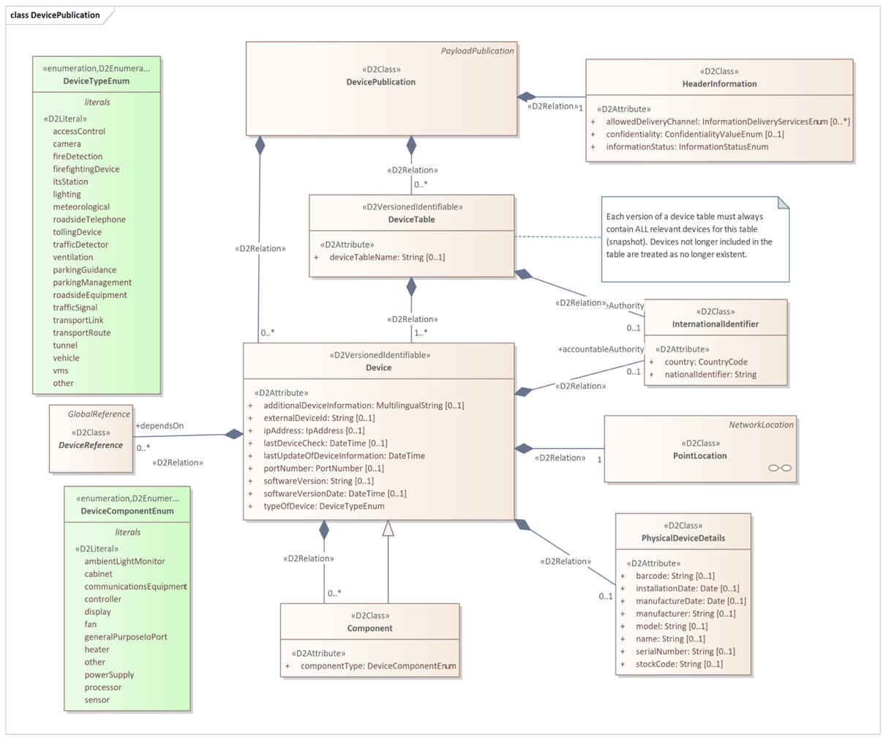
Figure 2 — DevicePublication class (Fig. 2 of the source standard)
A DevicePublication contains information on a collection of devices, either directly or via one or more DeviceTable objects. A single DevicePublication object should contain either DeviceTable objects or Device objects directly, not both.
A Device object contains static (or infrequently changing) information about a logical device that delivers a service. The class Device is <
A PhysicalDeviceDetails object contains information specific to the physical device that realises a logical device service (manufacturer, model, serial number, installation date, etc.).
6.3 Device status publication
This sub-clause describes, over three pages with the aid of two figures, the StatusPublication class, enabling description of the status of a set of devices defined in static publications.
A StatusPublication contains information on the status of one or more devices. It may do this either by providing one or more Status objects directly or by providing a collection of status for whole device tables using the StatusOfAllDevicesFromTable class.
A Status object holds dynamic information on the status of a device. It shall include at least a classification of health (ability to provide the service) selected from DeviceHealthEnum, the date and time of the last status update, and a reference to the associated device via a DeviceReference object. It may optionally carry an OperationalState object, one or more DevicePower objects, and references to related faults.
OperationalState concerns the operational state into which a device has been placed (e.g. maintenanceMode, off, on, powerSafeMode, specialMode, temporarilyDeactivated, permanentlyDeactivated), which is distinct from device health. DevicePower provides a classification of the health of the power source for a Device, for a specified kind of power source.
6.4 Device faults publication
This sub-clause describes, over two pages with the aid of two diagrams, the FaultPublication class, enabling description of device faults.
A FaultPublication contains information on faults of one or more devices. It may do this either by providing fault information for a whole DeviceTable, or directly for one or more individual devices. In both cases the fault information is provided via the AllFaultsOfSingleDevice class.
An AllFaultsOfSingleDevice object provides a snapshot of all current fault information for the single device identified via an associated DeviceReference object. It may contain zero or more DeviceFault objects.
A DeviceFault object describes a single fault of a single Device. DeviceFault inherits the properties of the Fault class defined in EN 16157-7. In addition a DeviceFault object shall indicate the type of fault selected from FaultTypeEnum in Annex A. It may also provide information on the impact on data, the affected component, and instructions on how the fault can be rectified. A DeviceFault object may also link to a fault information entry in an external catalogue.
6.5 Classes
This sub-clause describes, over 3 pages and one diagram, a set of classes that allow linking of status and fault information to devices described in other publications or in an external catalogue. These classes are: GeneralDeviceTableReference, VmsUnitTableReference, MeasurementSiteTableReference, GeneralDeviceReference, VmsUnitReference, MeasurementSiteReference, and CatalogueInformation.
DeviceTableReference and DeviceReference are abstract classes (subclasses of GlobalReference from EN 16157-7:2018). The concrete subclasses allow status and fault publications to reference devices defined not only in DevicePublications but also in other kinds of publications for more specific device types (VMS controllers, measurement sites).
CatalogueInformation objects provide links to other information using an ASN.1 object identifier (conforming to ISO/IEC 8824-1 and ISO/IEC 9834-1) rather than the DATEX II referencing mechanism.
6.6 DataTypes
This sub-clause describes, using one diagram and one paragraph of text, the ObjectIdentifier data type, used for references to other devices using the dot notation defined in ISO/IEC 9834-1 and ISO/IEC 8824-1. ObjectIdentifier is a specialisation of the String datatype defined in EN 16157-7:2018.
Annex A (normative) Data Dictionary
This annex (18 pages, 25 tables) provides a data dictionary identifying the definitions and characteristics of all classes, attributes, association ends, data types and enumerations appearing in the data model defined in Clause 6. Among other things it defines enumerated values for device types (Table 1 below) and enumerated values for the impact of a device fault on provided data (Table 2 below).
Table 1 — Values contained in the enumeration “DeviceTypeEnum” (Tab. A.18 of the source standard)
| Enumerated value name | Designation | Definition |
|---|---|---|
| accessControl | Access control | Access control equipment |
| camera | Camera | Camera |
| fireDetection | Fire detection | Fire detection device |
| firefightingDevice | Firefighting device | Firefighting device such as a sprinkler system |
| itsStation | Its station | An ITS station unit as defined in ISO 21217 |
| lighting | Lighting | Illumination device |
| meteorological | Meteorological | Meteorological equipment |
| other | Other | Some other device |
| parkingGuidance | Parking guidance | A device offering parking guidance |
| parkingManagement | Parking management | A device involved in parking management |
| roadsideEquipment | Roadside equipment | Roadside equipment |
| roadsideTelephone | Roadside telephone | Roadside emergency telephone |
| tollingDevice | Tolling device | Device used for road tolling |
| trafficDetector | Traffic detector | A device that detects vehicles |
| trafficSignal | Traffic signal | A traffic signal (controller and potentially multiple traffic lights) |
| transportLink | Transport link | An instrumented transport link, considered as a single data service |
| transportRoute | Transport route | An instrumented transport route, considered as a single data service |
| tunnel | Tunnel | A tunnel device |
| vehicle | Vehicle | A vehicle in its role as a connected communicating device |
| ventilation | Ventilation | Ventilation device |
| vms | Vms | A variable message sign |
Table 2 — Values contained in the enumeration “FaultImpactOnDataEnum” (Tab. A.19 of the source standard)
| Enumerated value name | Designation | Definition |
|---|---|---|
| downloadFailed | Download failed | A download failed. |
| intermittentData | Intermittent data | Data is transmitted intermittently, i.e. not continuously. |
| noData | No data | There is no data transmitted. |
| unreliableData | Unreliable data | The data is unreliable. |
| unspecified | Unspecified | The impact on data of the fault is not specified. |
Annex B (normative) XML Schema
This annex contains one extensive W3C XML Schema that is derived from the class model defined by this document. The schema shall be used when using an XML encoding. It is the result of applying the UML-to-XML Schema mapping defined in EN 16157-1:2018. This schema may be extended in a manner conformant to EN 16157-1:2018.
Supplied data claiming conformance to this document shall positively validate against the schema specified in this annex, including any permissible extensions.
Annex C (normative) Additional common datatypes
This annex introduces, over nearly two pages and using one diagram, two new data types PortNumber and IpAddress and determines their mapping to the W3C XML Schema. These datatypes are placed in the CommonExtension namespace and are used to identify IP addresses and port numbers associated with devices.
Intelligent Transport Systems – eSafety – ECall end to end conformance testing for eCall HLAP in hybrid circuit switched/packet switched network environments
EN 18052 · Published 2025 · 153 pages
This Extract does not replace the technical standard itself; it is only informative material about the standard.
Introduction
eCall is an emergency call triggered automatically by vehicle sensors or manually by the crew, which, via the mobile network, sends a standardized minimum set of data to the most appropriate Public Safety Answering Point (PSAP) containing information about the accident and the vehicle’s location, while simultaneously establishing a voice connection with the crew. European standards define the data structure, application protocols, and operational requirements of eCall for both traditional circuit-switched networks and modern packet-switched IP-based networks (e.g., LTE, 5G, and IMS), which are gradually replacing them. Due to the transitional period of coexistence between both network types, standards and conformity tests have also been developed for hybrid environments to ensure reliable and interoperable pan-European operation of eCall.
Note: This Extract presents selected chapters of the described document and retains the original chapter numbering.
Usage
The document described is an important reference for the certification of individual components of the eCall system. In this context, it is significant for certification authorities and testing laboratories. Furthermore, it enables eCall solution and product providers to issue declarations of conformity independently of other elements within the overall eCall chain.
Scope
The described document approaches conformity testing in a manner analogous to existing eCall conformance testing standards. This applies from the perspective of the following key actors:
-
In-Vehicle System (IVS)
-
Mobile Network Operator (MNO)
-
Public Safety Answering Point (PSAP)
Together with EN 16454 and EN 17240, the described document completes the set of documents for testing the conformity of all eCall components in various environments.
The scope of the document covers conformity testing of eCall technologies, products, and systems. The testing is intended for type approval of devices, rather than for verifying specific installations of units in vehicles.
Related Documents (Selection)
The clause contains references to eight related standards. The most relevant include:
-
EN 17905:2023, Intelligent transport systems — eSafety — eCall HLAP in hybrid circuit switched/packet switched network environments
-
prEN 17240, Intelligent transport systems — ESafety — ECall end to end conformance testing for IMS packet switched based systems
-
EN 16454, Intelligent transport systems — ESafety — ECall end to end conformance testing
3 Terms and Definitions
Clause 3 contains 27 definitions provided in full in the standard. In this extract, the following terms and definitions appear in particular:
eCall – emergency call generated either automatically via activation of in-vehicle sensors or manually by the vehicle occupants, which, when activated, provides notification and relevant location information to the most appropriate Public Safety Answering Point, by means of mobile wireless communications networks, carries a defined standardized Minimum Set of Data (MSD) notifying that there has been an incident that requires response from the emergency services, and establishes an audio channel between the occupants of the vehicle and the most appropriate Public Safety Answering Point
public safety answering point (PSAP) – physical location working on behalf of the national authorities where emergency calls are first received under the responsibility of a public authority or a private organization recognized by the national government
minimum set of data (MSD) – standardized data concept comprising data elements of relevant vehicle generated data essential for the performance of the eCall service
vehicle manufacturer – entity which first assembles the vehicle and provides eCall equipment as part of its specification and subsequently sells the vehicle directly or via an agent
4 Abbreviations
Clause 4 contains 43 symbols and abbreviations. In this extract, the following appear in particular:
| CS | Circuit Switched |
|---|---|
| CTP | Conformance Test Procedure |
| IMS | IP-Multimedia Subsystem |
| IVS | In-Vehicle System |
| LTE | Long Term Evolution |
| MNO | Mobile Network Operator |
| PS | Packet Switched |
| PSAP | Public Safety Answering Point |
Other terms and abbreviations from the ITS domain can be found in the ITSTerminology dictionary (www.itsterminology.org), the StandardLand website (www.standardland.cz) or the OBP platform (www.iso.org/obp).
5 Conformity with this Standard
The document described is intended to assess the conformity of the eCall system implementation at the level of the individual key actors in the eCall chain defined above. If a supplier declares conformity of their products with this document, they may do so only if they can demonstrate that all test procedures relevant to their product or service have been successfully completed.
6 General Description of the European eCall Transaction
Starting with this clause (covering 4 pages including figures and tables), the document presents the substantive content of the standard. Clause 6 provides a summarized description of the eCall transaction, including a state diagram. References to the related normative documents are provided. The clause also outlines the differences between eCall transactions carried out over circuit-switched and packet-switched networks. Additionally, it contains an overview table with the eCall call phases, including descriptions and abbreviations used throughout the document.
7 How to Use the Standard
This clause (approximately 1.5 pages of text) explains how to work with the standard. At a more general level, it defines the criteria for test success and clarifies the focus of the conformity testing procedures.
8 Requirements
This clause (covering 11 pages including figures and diagrams) summarizes the key requirements for performing conformity testing. Essentially, it presents the relationships between individual actors and identifies the interfaces that will be subject to conformity verification. It describes the naming conventions used in conformity tests and provides an overview matrix linking individual tests to eCall call phases and the type of test.

Figure 1 – Conformity Testing Points (not part of the described document)
9 Conformity Tests for In-Vehicle Systems (IVS)
This clause (covering 58 pages including diagrams and tables) specifies the requirements and parameters for conformity testing of in-vehicle systems (IVS). Within the clause, detailed descriptions of a total of 43 test scenarios are provided. Test scenarios cover:
-
CTP 1.1.1.1 – Self-test and fault indication
-
CTP 1.1.2.1 – Domain selection skipped in CS domain
-
CTP 1.1.2.2 – Domain selection skipped in PS domain
-
… and 41 other scenarios.
10 Conformity Tests for Mobile Network Operator Systems (MNO)
This clause (covering 9 pages including diagrams and tables) specifies the requirements and parameters for conformity testing of mobile network operators. Within the clause, detailed descriptions of a total of 6 test scenarios are provided. Test scenarios cover:
-
CTP 2.1.3.1 – New/updated MSD after in-call domain handover
-
CTP 2.1.3.2 – New/updated MSD after in-call domain handover – Roaming
-
CTP 2.1.5.1 – Call-back after in-call domain handover
-
… and 3 other scenarios.
11 Conformity Tests for Public Safety Answering Point Systems (PSAP)
This clause (covering 14 pages including diagrams and tables) specifies the requirements and parameters for conformity testing of PSAP systems receiving eCall calls. Within the clause, detailed descriptions of a total of 11 test scenarios are provided. Test scenarios cover:
-
CTP 3.1.10.1 – Logging MSD transmission type for eCall in a circuit-switched domain
-
CTP 3.1.10.2 – Logging MSD transmission type for eCall in a packet-switched domain
-
… and 9 other scenarios.
12 Labeling, Tagging, and Packaging
This clause only presents the basic requirements related to labeling and packaging of devices depending on the (non-)fulfillment of tests.
13 Declarations of Patents and Intellectual Property
No patents or other intellectual property rights are claimed within this standard, except for those specified in the referenced documents.
Electronic Fee Collection (EFC) – Information exchange between service provision and toll charging
EN ISO 12855 · Published 2022 (Edition 3) · 153 pages
This Extract does not replace the technical standard itself; it is only informative material about the standard.
Introduction
This technical standard (hereinafter also referred to as the “described document”) specifies the interface for the exchange of data messages between the main entities (roles) of the electronic fee collection system architecture, i.e., the toll charger and the toll service provider. It establishes the complete specification of data messages, their syntax, semantics, and the mechanism of their transmission.
Note: This Extract presents selected chapters of the described document and retains the original chapter numbering.
Usage
The described document is intended for toll chargers and toll service providers, as it establishes the basic elements of mutual interoperability at the level of their back-end systems.
Scope
The described document defines the exchange of information between the toll charger and the toll service provider. It describes the interface functionality, as well as the complete syntax and semantics of the data messages that can be exchanged via the interface (especially trusted objects, context data, exception lists, toll declarations, billing details, enforcement data). Furthermore, transmission mechanisms and support functions are described here.
Related Documents (Selection)
The described document refers to 25 technical standards, the most important of which are:
ISO 14906, Electronic Fee Collection (EFC) – Application interface definition for dedicated short-range communication (DSRC)
ISO 17573-1, Electronic Fee Collection – System architecture for vehicle-related tolling – Part 1: Reference model
ISO 17573-2, Electronic Fee Collection – System architecture for vehicle-related tolling – Part 2: Terminology
4 Abbreviations
This clause contains 42 abbreviations related to the described document, the most important of which are the following:
ADU application data unit
DSRC dedicated short-range communications
EFC electronic fee collection system; electronic fee collection
GNSS global navigation satellite system
OBE on-board equipment
RSE roadside equipment
TC toll charger
TSP toll service provider
Other terms and abbreviations from the ITS domain can be found in the ITS Terminology dictionary (www.itsterminology.org), the StandardLand website (www.standardland.cz) or the OBP platform (www.iso.org/obp).
5 Architecture
This clause, spanning 9 pages, contains a basic description of the interface functionalities for the exchange of data messages between the toll charger and the toll service provider. The following functionalities are described:
-
exchange of trusted objects;
-
provision of context data;
-
exception list management (e.g., blacklist, whitelist);
-
provision of toll declarations;
-
provision of billing details;
-
exchange of enforcement data;
-
exchange of service quality assurance data;
-
provision of medium provider billing details.
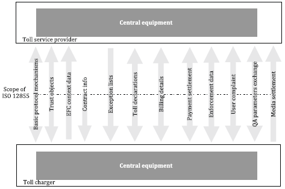
Figure 1 – Overview of functionalities (Fig. 3 of the source standard)
6 Specification
This clause, spanning 121 pages, contains a description of the structure of 19 application data units (ADUs) that form the data messages transmitted via the interface. This is the pivotal clause of the described document. The ADUs listed in the table below are defined sequentially:
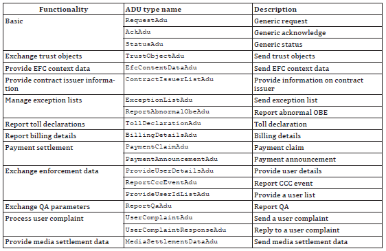
Table 1 – Overview of ADUs (Tab. 5 of the source standard)
For illustration, the definition of the ExceptionListADU data unit is provided below.
Table 2 – Definition of ExceptionListADU (Tab. 77 of the source standard)
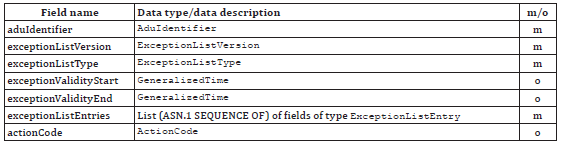
Individual data types are explained sequentially in the text, or their definition is provided. For illustration, the definition of the ExceptionListEntry data type is provided below.
Table 3 – Definition of ExceptionListEntry (Tab. 78 of the source standard)
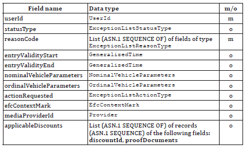
7 Transmission Mechanisms
This clause, spanning 3 pages, establishes recommendations regarding the use of a secure communication channel, data encoding, message authentication, and message signing algorithms.
Annex A (normative) – Specification of EFC Data Types
Annex A, spanning 1 page, provides the specification of the data types used according to ASN.1. A reference is provided here to the relevant ASN files, which can be imported into other application modules.
Annex B (informative) – Enforcement Process
Annex B, spanning 5 pages, describes the enforcement process. The process is illustrated using an activity diagram capturing the steps implemented on the side of the toll charger and the toll service provider, as well as the exchanged data messages.
Annex C (informative) – Data Flow Example in a Toll Domain
Annex C, spanning 3 pages, describes an example of a data flow in a toll domain. The example is illustrated using a sequence diagram capturing the data exchange between the toll charger, on-board equipment (OBE), toll service provider, and user.
Annex D (informative) – Example of Rounding
Annex D, spanning 4 pages, illustrates using the EasyGo example how rounding of amounts from aggregated toll transactions can be approached when creating billing details.
Annex E (informative) – Example of Toll Calculation Based on Context Data
Annex E, spanning 4 pages, provides an example of toll calculation based on tariff table information, toll context information, and toll domain usage information.
Electronic Fee Collection (EFC) – Application interface definition for dedicated short-range communication (DSRC)
EN ISO 14906 · Published 2018 (Edition 3) · 123 pages
This Extract does not replace the technical standard itself; it is only informative material about the standard.
Introduction
This technical standard (hereinafter also referred to as the “described document”) specifies the application interface for electronic fee collection (EFC) systems that utilize dedicated short-range communication (DSRC). Specifically, it establishes the technical conditions for the EFC transaction model, EFC functions, and EFC data attributes from which an EFC transaction can be created in a DSRC environment.
Note: This Extract presents selected chapters of the described document and retains the original chapter numbering.
Usage
The described document is intended for operators of toll systems built on DSRC technology as well as for toll service providers. The described document establishes the basic elements of mutual interoperability of electronic fee collection system components, specifically on-board equipment (OBE) and roadside equipment (RSE).
Scope
The described document specifies the application interface for electronic fee collection systems that utilize DSRC technology. The application interface represents the interface of the EFC application process to the DSRC application layer, as illustrated in Figure 1. The document provides specifications for:
-
EFC data attributes, i.e., information about the EFC application;
-
procedures for addressing attributes and (hardware) EFC components (e.g., ICC and MMI);
-
EFC application functions, i.e., further qualification of actions through definitions of respective services;
-
the EFC transaction model defining common elements and steps of any EFC transaction;
-
interface behavior to ensure interoperability at the EFC application level and the DSRC application interface;
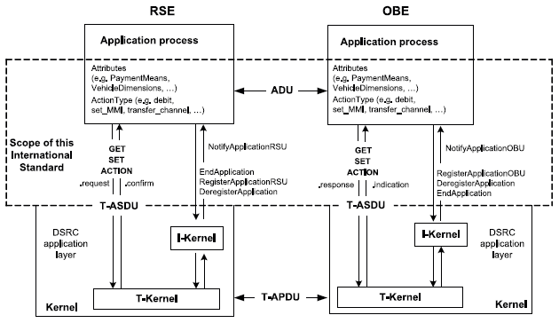
- Figure 1 – Scope of the original document (Fig. 1 of the source standard)
Related Documents (Selection)
The described document refers to 12 technical standards, the most important of which are:
-
ISO/IEC 9797-1, Information technology – Security techniques – Message Authentication Codes (MACs) — Part 1: Mechanisms using a block cipher
-
ISO 15628, Intelligent transport systems — Dedicated Short-Range Communication (DSRC) – Application layer
3 Terms and Definitions
This clause contains 17 terms and definitions related to the described document, the most important of which are:
attribute – an addressed data packet consisting of one or a sequence of multiple data elements
on-board equipment – equipment installed in a vehicle performing the required EFC functions
roadside equipment – equipment located along the infrastructure performing the required EFC functions
transaction – a complete exchange of information between roadside equipment (RSE) and on-board equipment (OBE)
4 Abbreviations
This clause contains 35 abbreviations related to the described document, the most important of which are the following:
DSRC dedicated short-range communications
EFC electronic fee collection system; electronic fee collection
OBE on-board equipment
RSE roadside equipment
Other terms and abbreviations from the ITS domain can be found in the ITS Terminology dictionary (www.itsterminology.org), the StandardLand website (www.standardland.cz) or the OBP platform (www.iso.org/obp).
5 DSRC Application Interface Architecture
This clause, spanning 5 pages, establishes which DSRC application interface services the electronic fee collection system recognizes, in what order it invokes them, and how it uses them to retrieve or change attributes stored in the on-board equipment. The basic services used include the functions GET, SET, ACTION, EVENT-REPORT, and INITIALISATION.
Furthermore, this clause establishes the manner in which the roadside equipment (RSE) accesses data attributes stored in the on-board equipment (OBE). A concept of namespaces is introduced here so that multiple sets of attributes can be stored separately in one on-board equipment, each for use in a different toll domain. The identification of each namespace is carried out through the EFC-ContextMark attribute.
6 EFC Transaction Model
This clause, spanning 5 pages, establishes the EFC transaction model consisting of two phases – initialization and transaction.
The initialization phase is based on the exchange of messages with transmitter and vehicle parameters (known as BST and VST), within which information is transmitted regarding the services, functions, and attributes supported by the on-board equipment (OBE) and roadside equipment (RSE). This clause establishes the specific content of these tables for the EFC application.
During the transaction phase, the services identified within the initialization phase are utilized for the purpose of registering passage through a tolled section and exchanging information to determine the toll, as well as security elements to prevent subsequent manipulation of the record.
7 EFC Functions
This clause, spanning 2 pages, describes the DSRC application interface functions defined for the EFC application. A total of 16 functions are described here, which are listed in the following table. Each function consists of a pair of service primitives, i.e., a request and a response, the parameters of which are described in detail in this clause.
Table 1 – Overview of DSRC application interface functions (Tab. 1 of the source standard)

8 EFC Attributes
This clause, spanning 24 pages, describes all EFC data attributes, their name, purpose, and data content, i.e., a list of data elements forming the given attribute. For individual elements, their definition, data type according to ASN.1, permitted length in bytes, and permitted range of values are provided. A total of 47 attributes are specified in the described document, which are categorized into the following data groups – contract, receipt, vehicle, equipment, driver, and payment. This is a pivotal clause of the described document.
Annex A (normative) – Specification of EFC Data Types
Annex A, spanning 1 page, provides the specification of the data types used according to ASN.1. A reference is provided here to the relevant ASN files, which can be imported into other application modules.
Annex B (informative) – CARDME Transaction
Annex B, spanning 34 pages, provides an informative example of a transaction through the specification of the CARDME transaction. The first part presents the course of the transaction divided into these phases:
-
initialization, when the OBE provides contract information to the RSE;
-
presentation, when the RSE reads information about the OBE (details about the contract, account, vehicle classification, last transaction, etc.);
-
receipt, when the RSE provides an electronic receipt to the OBE;
-
tracking and closing, when the RSE tracks the vehicle in the communication zone and subsequently closes the transaction;
In the next part of this annex, the individual phases are described from the perspective of data exchange, and finally, the specification at the bit level is provided for the individual phases.
Annex C (informative) – Examples of EFC Transaction Types
Annex C, spanning 12 pages, provides an informative example of various types of EFC transactions using specific EFC functions and attributes established in this described document. Examples are provided for the following transaction types:
-
read-only EFC transaction;
-
read and write EFC transaction;
-
EFC electronic purse transaction using the DEBIT function;
-
EFC electronic purse transaction using the TRANSFER_CHANNEL function;
-
EFC transaction using multiple contracts;
This annex aims to demonstrate the concept of various transactions and show how they are introduced in the described document. For illustration, an example of a read-only EFC transaction is provided below.
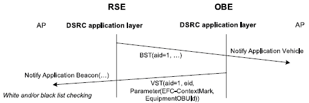
Figure 2 – EFC read-only transaction (Fig. C.1 of the source standard)
Annex D (normative) – Mapping Table Between Character Sets
Annex D, spanning 1 page, establishes mapping rules for converting characters of the ISO 8859-2 (Latin2, Eastern European) character set and the ISO 8859-5 (Cyrillic) character set into the ISO 8859-1 (Latin1, Western European) character set.
Annex E (informative) – Mapping Table for Vehicle Attributes
Annex E, spanning 3 pages, establishes mapping rules between attributes recorded in the vehicle registration certificate and the EFC attributes defined by this described document. The aim of this annex is to facilitate the personalization of the OBE with vehicle data. For illustration, the mapping for several of these attributes is provided below.
Table 2 – Mapping table for vehicle attributes (part of the table E.1 of the original document)
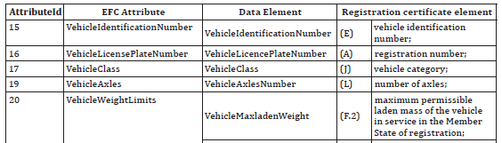
Annex F (normative) – Security Calculations According to DES
Annex F, spanning 5 pages, contains a detailed definition of security calculations according to the Data Encryption Standard (DES).
Annex G (informative) – Example of Security Calculations According to DES
Annex G, spanning 3 pages, provides a total of 4 numerical examples of security calculations according to the Data Encryption Standard (DES).
Annex H (normative) – Security Calculations According to AES
Annex H, spanning 5 pages, contains a detailed definition of security calculations according to the Advanced Encryption Standard (AES).
Annex I (informative) – Example of Security Calculations According to AES
Annex I, spanning 2 pages, provides a total of 4 numerical examples of security calculations according to the Advanced Encryption Standard (AES).
Electronic Fee Collection (EFC) – System architecture for vehicle-related tolling – Part 1: Reference model
EN ISO 17573-1 · Published 2019 · 58 pages
This Extract does not replace the technical standard itself; it is only informative material about the standard.
Introduction
This standard, consisting of a single part (hereinafter referred to as the “described document”), defines the architecture for tolling environments. In these environments, a user who has a contract with only one Service Provider can use their vehicle across various Toll Domains operated by different Toll Chargers.
Note: This Extract presents selected chapters of the described document and retains the original chapter numbering.
Usage
The objective of the document is to describe the architecture of tolling systems and the roles of individual stakeholders, including the definition of responsibilities and mutual interactions. However, the document does not define internal functions or responsibilities within individual roles.
Since the document relates to the overall functionality of tolling systems, including enforcement mechanisms, it is primarily relevant to public institutions with the authority to impose tolling obligations (and potentially subsequent collection) on defined sections of road infrastructure and the duty to manage said infrastructure.
Scope
The document defines the architectural model, including roles, responsibilities, and mutual interactions. It also covers services provided within the tolling environment, terms and definitions used in EFC systems, and the identification of interoperable interfaces for communication between individual EFC systems.
Related Documents (Selection)
The following standard is key to this document:
ISO 17427-1: Intelligent Transport Systems – Cooperative ITS – Part 1: Roles and responsibilities in the context of architecture for cooperative ITS.
3 Terms and Definitions
This clause contains 20 terms, the most important of which are the following:
Interoperability – The ability of systems to exchange information and utilize that information.
tariff scheme – A set of rules required to correctly determine the toll amount for a vehicle using road infrastructure within a toll domain
toll domain – An area or part of the road infrastructure subject to a toll regime
toll regime – A set of rules, including enforcement mechanisms, governing toll collection within a specific toll domain
toll scheme – The organizational perspective of a toll regime, including roles and their relationships
4 Abbreviations
This clause contains 17 abbreviations, the most important of which are the following:
DSRC Dedicated Short-Range Communication
EETS European Electronic Toll Service
GNSS Global Navigation Satellite System
OBU On-Board Unit
RSE Road-Side Equipment
TC Toll Charger
Other terms and abbreviations from the ITS domain can be found in the ITS Terminology dictionary (www.itsterminology.org), the StandardLand website (www.standardland.cz) or the OBP platform (www.iso.org/obp).
5 EFC Organization: Roles and Objectives
This clause, spanning two pages, defines the individual roles within the EFC system architecture using internal and external organizational objects, as defined in ISO 17427-1. The categorization into external and internal roles (relative to the EFC system itself) reflects the necessity of a given role’s existence within the implementation of the EFC system as such.
The distribution of these roles is illustrated in Figure 1 (blue denotes external roles, green denotes internal). This clause contains a detailed description and the purpose of individual external roles within the EFC community, for example:
-
Telecommunications systems, providing communication services for data transmission between internal enterprise objects of the EFC system (fixed network) or data transmission services between the on-board unit and tolling equipment (wireless network).
-
Standardization and certification authorities, defining EFC standards or standards related to EFC systems or relevant to individual toll domains.

Figure 1 – Organizational objects in EFC (Fig. 1 of the source standard)
6 Internal Roles within the EFC Environment
This clause, spanning five pages, describes various internal roles within the EFC system environment as sets of responsibilities defined within the scope of EFC system functionality. Roles are described generically using associated responsibility groups, where each group encompasses items that are logically interconnected, either by their objectives and/or the actors assuming the respective role (see Figure 2 below):
-
Interoperability Manager: Tasked with managing the rules of the overall toll regime. Responsibilities include:
-
Defining security and data privacy concepts.
-
Defining identification schemes and granting ID codes to tolling applications.
-
Certification processes for equipment and operational permits, as well as dispute resolution and monitoring.
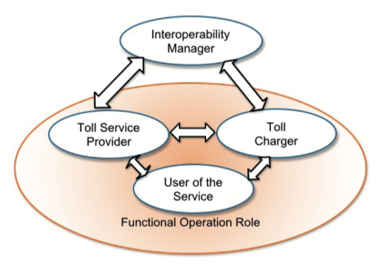
Figure 2 – Roles in toll environment (Fig. 2 of the source standard)
Additionally, this clause provides a summary of the individual roles in terms of their responsibilities and mutual interactions (see Figure 3).

Figure 3 – Roles and their interactions and responsibilities (Fig. 3 of the source standard)
7 Services
This clause, spanning 18 pages, provides a description of the services within the individual roles described in Clause 6, with respect to their interaction (i.e., the description of internal services within individual roles is outside the scope of the described document). Services are defined with respect to the roles involved, for example:
-
Services involving the Toll Charger (TC), Interoperability Manager, and Service Provider include registration processes for the Toll Charger and Service Provider, dispute resolution, the exchange of trusted objects required for mutual communication, and the modification of toll regime rules (see Figure 4).
-
Services involving the Service Provider and User include processes for the provision of contracts, customer services, and billing services.
-
Services involving the Toll Charger and Service Provider include data collection regarding the usage of road infrastructure subject to tolling, exception handling, and payment services.
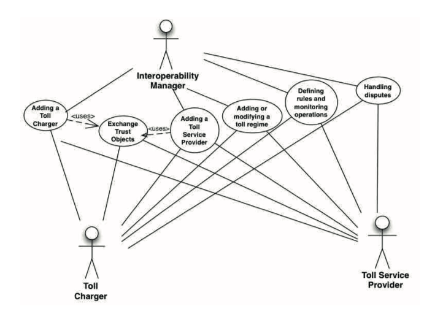
Figure 4 – Services including toll charger, interoperability manager and service provider (Fig. 5 of the source standard)
8 Physical Architecture of EFC
This clause, spanning 3 pages, briefly describes the physical architecture of the EFC system and its relationship to the architecture from ISO 17427-1.
Annex A (informative) – Mapping of EFC architecture to C-ITS
Annex A spanning 3 pages, describes the principle of mapping the EFC architecture to the C-ITS organizational architecture model (ISO 17427-1), whereby the content of this standard relates only to roles responsible for system operation and functional operation.
Annex B (informative) – Information schemes and basic information types
Annex B, spanning 6 pages, provides a viewpoint on the EFC architecture within the ODP (Open Distributed Processing) standard, which defines a total of 5 perspectives/viewpoints. Within this viewpoint, individual information classes (including information objects) are defined, which are communicated between the individual roles of the architecture (see Table 1).
Table 1 – Information classes (Tab. 8 of the source standard)
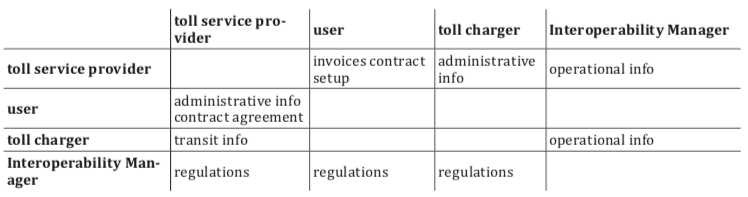
Annex C (informative) – Organizational Objects within Roles
Annex C, spanning five pages, contains a description of the individual roles of the EFC system architecture within organizational structures from the perspective of the following levels:
-
Organizational level, describing the assigned responsibilities.
-
Equipment level, identifying the individual objects used by actors to fulfill their roles (e.g., OBE – On-Board Equipment).
-
Transport services level, describing the types of services provided within the toll domain.
Intelligent Transport Systems – Public-area mobile robots (PMR) – Part 1: Overview of the paradigm
ISO/TR 4448-1 · Published 2024 · 24 pages
This Extract does not replace the technical standard itself; it is only informative material about the standard.
Introduction
In 2023, there are several hundred companies around the world – mostly start-ups – engaged in the development of small, remote-controlled and sometimes partially automated devices for operation on city sidewalks and cycle paths. Thousands of small retailers and dozens of delivery companies use these systems for last-mile delivery. Already, many more cities have a small number of such PMRs than robotic taxis in pilot operation. This means that cities are likely to face PMR regulation requirements much sooner than the regulation of robotic cars and trucks is expected.
Note: This Extract presents selected clauses of the described document and retains the original clause numbering.
Use
The described document serves as a first introduction to the issue of mobile robots in public space and is intended for all those who deal with the issue, i.e. both at the level of the Ministry of Transport of the Czech Republic and local governments or operators of such systems or robot manufacturers. The document does not set any requirements, it only outlines areas that should be standardized.
Related Documents (Selection)
The document described refers to only one ISO/TS 14812, which is the normative ITS dictionary.
Scope
This document provides an overview of the ground-based automated mobility systems deployment paradigm. The paradigm covers such curbsides and pathways as are suitable for co-temporal, collaborative use by various types and combinations of automated and non-automated, wheeled, or ambulatory, motorized and non-motorized, mobility-related vehicles and devices as well as for various levels of automated or remote operation of such vehicles. This includes vehicles and devices that move people as well as goods within proximate distances of human bystanders.
Note: Aerial (flying) drones are not part of the scope.
3 Terms and definitions
This part of the technical standard defines 14 terms, the most important of which are the following:
delivery robot – a robotic vehicle used to deliver goods, food, and other items, often for “last mile” applications
Note 1 to the entry: Although the word “drone” is correctly used to describe a robot on wheels, this document uses the term “robot” and the specific abbreviation PMR
pathway – infrastructure designed to permit the movement of various combinations of active transportation users and public-area mobile robots (PMRs) within the same space, including outdoor footways, cycleways, crosswalks, road shoulders, trails and indoor passageways, corridors or hallways
(Note: It usually forms a network of pathways.)
public-area mobile robot (PMR); (ground) automated mobile systems in public space (PMR) – wheeled or legged (ambulatory) ground-based device that is designed to travel along public, shared, active transportation pathways without the use of visible human assistance or physical guides
Note 1 to entry: Physical guides include rails and curbs. Note 2 to entry: While the term public-area mobile robot (PMR) excludes devices with visible human assistance, a PMR can be teleoperated by a human. Note 3 to entry: While the term “PMR” excludes devices with visible human assistance, PMRs can carry humans as passengers, e.g. an automated wheelchair. Note 4 to entry: While the term “PMR” excludes devices with visible human assistance, PMRs can be electronically tethered to follow a human.
robotaxi – vehicle with an automated driving system (ADS) that is configured to perform the entire dynamic driving task (DDT) throughout its operational design domain (ODD) for the purpose of a for-hire passenger service
Note 1 to entry: This is a form of ADS-DV (Automated Driving System – Dedicated Vehicle) defined in SAE J3016 202104. EXAMPLE Remotely monitored automated taxi.
4 Abbreviations
This clause lists 12 abbreviations from the field of mobile robots in public space, the most important of which are the following:
ADS automated driving system
DDT dynamic driving task
IoT internet of things
PMR public-area mobile robot, ground-based automated mobile system in public space
PUDO pickup and drop off
VRU vulnerable road user
Other terms and abbreviations from the ITS domain can be found in the ITSTerminology dictionary (www.itsterminology.org), the StandardLand website (www.standardland.cz) or the OBP platform (www.iso.org/obp).
5 Purpose and justification
Clause 5 is 1.5 pages long and explains the general reasons for standardization, reasons related to traffic safety, planning, commercial use, operational and also legal requirements and insurance.
6 Parts outline
Clause 6 is 4 pages long and elaborates on the necessary steps that the standardization of this new area of transport requires. The first step is the nomenclature and definition of data, including the subsequent handling of data, the second step is the standard options for the robot’s behavior and the related topic of security, then the level of readiness of the city for the deployment of such a service is also described, as well as the need for personal assistance. For example, for the definition of behavior, the document also lists 4 main cases: boarding/exiting/loading/unloading from a mobile robot by the curb, the robot’s access to zones where people are moving, the behavior of the robot in these zones, and the robot’s communication methods when interacting with a human. As part of the city’s readiness for the deployment of such a service, the quality of the given network of paths for the movement of robots, the movement of robots in extreme weather, the resolution of accident situations and the supervision of proper maintenance of robots, e.g. in the resolution or updating of map data, is described on half a page.
7 Context
Clause 7 is 10 pages long and describes the reasons why standardization is necessary. Subclause 7.1 discusses the comparison of robotic vehicles and delivery robots in terms of quantity and timing of deployment, with standardisation of these means being more urgent.

Figure 1 — Example of PMR forms for the distribution of small packages (Source. Urban robotics foundation)
Subclause 7.2 describes the need to create a safe space in the public space of the city, where such systems could move, the majority of which is devoted to safety aspects and also to lower operating costs than those associated with robo-vehicles.
Subclause 7.3 deals with challenges such as common obstacles on the infrastructure/pavement, such as garbage cans, parked vehicles, stored building materials or evicted furniture, fallen tree branches or bushes growing into the road, places where the pavement ends or poor quality of the pavement surface. At the same time, it also lists 12 issues that need to be solved by regulation:
-
pedestrian and cyclist safety and rights-of-way;
-
requirements for infrastructure dimensions (related to accessibility regulations);
-
PMR speeds, dimensions, weights (maximums and minimums);
-
equipment such as brakes, lights, speakers, mics, reflectors, signage (decals);
-
device identification and its visibility for enforcement;
-
areas and hours of operation, especially avoiding certain zones such as schools;
-
PMR behaviour regarding accessibility (e.g. distance-keeping, blocking ramps or entrance ways);
-
audible signals emanating from a PMR such as their loudness and meaning;
-
requirements to alert other users of PMR presence (sounds, lights, flags);
-
requirements to recognize and respond to sounds such as emergency vehicle sirens;
-
enforcement and penalties;
-
liability and insurance.
8 Operating principles for PMRs
Operating and deployment standards for operations in shared human-social environments should establish general rules for PMRs across various types of pathways used by active transportation users of all abilities.This clause contains two subclauses. 8.1 Contrasting types of infrastructure (contrasting pathway, curb, cycleways and footway). 8.2 Behavioural factors contains Table 1: Factors that can influence the acceptance and workability of PMRs, where many important factors for the behavioural aspects for PMRs are listed and described.
9 Governance principles for PMRs
Clause 9 contains two subclauses. In 9.1. General explains on 1 page general governance principles for PMRs. It also states that the ISO 4888 series is designed to maintain neutrality by providing the essential data and procedures needed and its structure enables legislators to tailor the standards to local governance needs while ensuring that relevant rules can be clearly communicated to roboticists, operators of automated systems, and end users. Second subclause describes 9.2 Similarities between PMRs and wheeled, human-assistive devices.
10 Environmental and social considerations
Clause 10 on 1.5 pages describes 10.1 Environmental (climate and weather) resilience certification and 10.2 Social considerations.
11 Use cases
This Clause contains Table 2 – Selection of use cases for PMRs, which includes a description of 12 current scenarios of use cases.
The Bibliography
Provides 4 references to the parking data model, the taxonomy of autonomous transport and two articles on robotaxis and the transformation of public space with the advent of mobile robots.
Intelligent transport systems – Graphic Data Dictionary – Part 1: Specification
ISO 14823-1 · Published 2024 · 73 pages
This Extract does not replace the technical standard itself; it is only informative material about the standard.
Introduction
The standard ISO 14823-1:2024 defines the Graphic Data Dictionary (GDD) – a unified, language-independent system for encoding traffic signs and pictograms for the needs of Intelligent Transport Systems (ITS). Its purpose is to enable efficient transmission, interpretation, and display of traffic information across different countries, systems, and technologies. This dictionary is used for information exchange between centres (DATEX II) and between infrastructure and vehicles (cooperative systems, C-ITS) for describing traffic signs displayed, for example, on variable message signs.
This revision of the standard is a fundamental rework of the original ISO 14823:2017. The original standard, due to its use of a simple identifier based on ISO 3166-1 and a five-digit structure (service category – nature – sequence number), had two essential limitations: there was no globally unique identification of pictograms, and adding new pictograms was inflexible because the numeric space was rigidly structured and difficult to extend.
This revision therefore introduces a more robust mechanism based on the relative object identifier (OID), which enables global identification, hierarchy, and extensibility without breaking compatibility. The revision contains following essential technical and conceptual changes:
-
an updated version 2 of the GDD based on OID and relative object identifiers, enabling global identification, hierarchical generalisation and adding new codes without collisions,
-
support for more complex messages thanks to the possibility of including up to four pictograms in a single object,
-
addition of new codes and removal of redundant ones, adjustment of attributes for better compatibility with other ITS standards,
-
marking codes as “current” or “deprecated” for controlled evolution,
-
preservation of full backward compatibility with ISO 14823:2017.
This Extract describes Part 1 of the GDD standard (hereinafter “the described document”) with the specification of the format and the tables of pictograms of individual signs.
Note: This Extract presents selected chapters of the described document and retains the original chapter numbering.
Use
The described document defines the encoding of various traffic signs and serves as the technical foundation for systems that need to uniquely identify and process traffic pictograms in digital form. It provides a unified and extensible framework that enables consistent handling of traffic pictograms regardless of national differences or the communication technology used.
The standard is intended especially for developers and architects of ITS systems who implement support for digital traffic signs in C-ITS, V2X communication or navigation services, vehicle manufacturers and their suppliers who integrate pictograms into onboard systems, ADAS and in-vehicle signage, infrastructure operators and traffic centres that publish traffic information through VMS, C-ITS or DATEX II**, providers of traffic and navigation services** who need interoperable encoding across countries and systems and, manufacturers of end-user devices and applications that display traffic information to users.
Related Documents (Selection)
The described document lists six normative references to the following standards ISO 3166-1 (Country codes), ISO 8601-1 (Date and time representation), ISO 8824-1 (ASN.1 notation), ISO/IEC 8825-5 (Mapping XML schemas to ASN.1), ISO/IEC 8859-1 (Two-letter country codes) and, ISO/IEC 19505-1 (UML modelling).
The text also mentions the previous edition ISO 14823:2017, with which this version is backward compatible.
Scope
The document defines the structure of the GDD and the rules for encoding pictograms as a unified mechanism for encoding, transmitting, and interpreting graphical elements (traffic signs) within ITS. It does not address the method of their graphical rendering nor the formats of transmission protocols. The standard is intended for use in ITS applications that need to uniquely identify and share the meaning of traffic signs in digital form.
3 Terms and definitions
This clause defines the basic concepts used within the Graphic Data Dictionary (GDD). It contains a total of 12 terms describing the structure of codes, their meaning and related concepts. The key ones include:
graphic data dictionary – a systematically organised catalogue of pictogram codes used in ITS,
pictogram – a graphic symbol or icon displayed on a static traffic sign or on an IT system display (e.g. VMS), providing travellers with information about traffic conditions, restrictions, or public facilities
pictogram code – a combination of a service category code and a pictogram category code, optionally supplemented by a country code (in version 1)
relative object identifier – an identifier that determines an object by its position within the OID tree relative to a defined root
attribute – additional coded information that clarifies the meaning of the pictogram (e.g. direction, distance, time)
specialization – a relationship between a general class and its more specific variant that adds additional semantic elements
4 Abbreviations
The clause lists 10 abbreviations used in the document. For the purposes of this Extract, the following are the most important:
ASN.1 Abstract Syntax Notation One, the formal language used to define the structure and encoding of the GDD
GDD Graphic Data Dictionary, the dictionary defined by this standard
OID Object Identifier, the identifier used in version 2 for unique identification of pictograms
VMS Variable Message Sign, variable traffic signage capable of displaying pictograms defined in the GDD
Other terms and abbreviations from the ITS domain can be found in the ITS Terminology dictionary (www.itsterminology.org), the StandardLand website (www.standardland.cz) or the OBP platform (www.iso.org/obp).
5 Conformance
This clause, in four lines, defines two basic conditions for conformance. The implementation must use the GDD structure defined in the standard, and it must select pictogram codes exclusively from the tables provided in the document.
6 Requirements
This clause, one page long, lists ten basic functional requirements for the use of the GDD in ITS, with references to parts of the standard. Among the requirements are, for example: graphic data must contain a version and an identifier (OID or country code), the selection of the pictogram code must correspond to the appropriate table according to the type of sign (warning, regulatory, informational, public facilities, supplementary panels, etc.).
7 Structure of the pictogram code
This clause, four pages in length, defines two parallel mechanisms for pictograms identification, their hierarchy, and the rules for extension, including the marking of obsolete codes.
Clause 7.1 General explains the existence of two versions of the GDD. Version 1 (country code + pictogram code) and Version 2 (relative OID). Both versions are supported in parallel for backward compatibility.
Clause 7.2 Current and deprecated signs define the lifecycle of pictogram codes. All codes must be marked as current or deprecated.
Clause 7.3 Relative object identifier (relative OID) describes the OID hierarchy registered under {joint-iso-itut(2) its(28) gdd(5)} and the way pictograms can be generalized according to the required level of detail. It provides examples showing how an application may generalize a relative OID to distinct levels depending on the needed detail (warning sign: specific animal → general animal → general warning).
Clause 7.4 Country code states that the country code used is the two-letter code according to ISO 3166-1 (version 1).
Clause 7.5 Pictogram code and OID contains Table 1, which defines the structure and numbering of pictograms for version 1 in the form “service category → subcategory → nature → sequence number” (e.g. trafficSign (1) + regulatory (2) + mandatory (7) + xx ⇒ {1 2 7 xx}).
8 Numbering of pictogram codes
The clause, spanning 40 pages, defines the numerical ranges and mnemonics for all pictogram categories and provides the complete list of codes used in the GDD. It consists primarily of extensive code tables.
Clause 8.1 General states that each pictogram is assigned a code and a mnemonic name. The codes are divided according to the type of sign.
Clause 8.2 Mnemonics of the codes describes the rules for forming names in lowerCamelCase, without spaces and without articles. One illustrative example is provided.
Table 1 (excerpt from Table 2 of the standard) Assigning a service category code and pictogram category code to a specific phrase (mnemonic):
| Pictogram code | Pictogram name | Mnemonic | |
|---|---|---|---|
| Service category code | Pictogram category code | Intersection where priority is prescribed by the general priority rule (crossroads) | intersectionWherePriorityIsPrescribed GeneralByPriorityRuleCrossroads |
| 11 | 111 |
The following clauses (8.3–8.9) contain the definitions of codes presented through an extensive table in which each pictogram code is assigned a name and a mnemonic. The codes in the tables are grouped into sets, and the sizes of these sets range from tens to hundreds of pictogram codes, with gaps between the sets reserved for future use.
Clause 8.3 Warning traffic signs (pictogram codes 11111–11999, approximately 9 pages of tables) includes pictograms used to provide advance warning to drivers about dangerous or deteriorated road conditions. These include warnings about obstacles, hazardous sections, animals, weather phenomena, or other situations requiring increased attention.
Clause 8.4 Regulatory traffic signs (pictogram codes 12111–12999, approximately 10 pages of tables) contains pictograms expressing obligations, prohibitions, and restrictions. The standard divides them into three groups:
-
signs regulating priority (12111–12399),
-
prohibitions and restrictions (12411–12699),
-
mandatory signs (12711–12999).
Clause 8.5 Guidance traffic signs (pictogram codes 13111–13999, approximately 11 pages of tables) includes pictograms providing navigational, directional, and general informational content. The standard divides them into six subgroups:
-
advance directional information (13111–13399),
-
instructions (13411–13499),
-
notifications (13511–13599),
-
lane guidance (13611–13699),
-
warnings (13711–13799),
-
identification of places and roads (13811–13999).
Clause 8.6 Public facilities (pictogram codes 21111–21999, approximately 3 pages of tables) contains pictograms indicating public services and facilities such as parking areas, fuel stations, restaurants, hospitals, toilets, etc.
Clause 8.7 Ambient conditions (pictogram codes 31111–31999, approximately 2 pages of tables) includes pictograms indicating weather and other environmental conditions that may affect traffic (e.g. rain, fog, wind, snow).
Clause 8.8 Road conditions (pictogram codes 32111–32999, approximately 1 page of tables) contains pictograms informing about road surface conditions and events along the route (e.g. accidents, congestion, closures, slippery road).
Annex A – ASN.1 description of GDD (version 2)
This annex contains a one-paragraph reference to the complete formal definition of GDD version 2 in ASN.1, maintained at: https://standards.iso.org/iso/14823/-1/ed-1/en/
Annex B – Attributes of GDD (version 2)
This annex, approximately 10 pages long, contains the definition of attributes applicable to pictograms in version 2, including their types, ranges, and meanings. It also includes tables of values (e.g. directions, distances, time information). It serves as a reference catalogue for interpreting supplementary information.
Annex C – UML diagram of GDD (version 2)
This annex, approximately 3 pages long, contains four UML diagrams of the GDD version 2 structures. The diagrams illustrate relationships between pictograms, attributes, specializations and OIDs.
Annex D – Specializations (version 2)
This annex, approximately 2 pages long, describes the mechanism of specializations — the method for creating derived pictograms or regional variants without disrupting the basic GDD structure. It provides rules for extending the OID tree.
Annex E – ASN.1 description of GDD (version 1)
This annex contains a one-paragraph reference to the original ASN.1 definition of GDD from ISO 14823:2017. It serves for backward compatibility and support of older implementations using country-code-based identifiers.
Annex F – Attributes of GDD (version 1)
This annex, approximately 6 pages long, lists the attributes used in version 1. The structure is simpler than in version 2 and corresponds to the original 2017 model. It includes tables of values for directions, distances, and other supplementary information.
Annex G – UML diagram of GDD (version 1)
This annex, one page long, contains a single UML model of the original GDD version 1. It serves as visual documentation of the older model.
Annex H – List of directions at diverging point
This annex, approximately 5 pages long, contains one extensive table of numerical values for directional information used with pictograms, especially in the context of diverging lanes or branching roads. These values are used as attributes.
Annex I – Example GDD dataset for the U.N. and selected countries
This annex, half a page long, refers to a URL with illustrative examples of pictogram codes for the U.N. and some countries. It serves as a demonstration of how national variants can be incorporated into the GDD.
Annex J – Mapping OID to pictogram code (version 1)
This annex, approximately 2 pages long, provides an informative overview of the relationships between version 1 pictogram codes and their corresponding nodes in the OID tree. It explains how the original numeric codes (version 1) can be mapped to the OID structure used in version 2, enabling comparison or conversion between the two versions. The annex serves as a tool for interoperability and understanding the relationship between the historical coding and the new OID-based model.
Bibliography
The bibliography, half a page long, contains non-normative references to documents related to GDD, ASN.1 and the ITS domain. These sources provide supplementary information for implementation or deeper understanding of the context of the standard but are not mandatory for conformance.
Intelligent transport systems – Adaptive cruise control systems – Performance requirements and test procedures
ISO 15622 · Published 2018 (Edition 3) · 24 pages
This Extract does not replace the technical standard itself; it is only informative material about the standard.
Introduction
This standard belongs to the family of standards dealing with driver assistance systems and intelligent transport systems. The main function of Adaptive Cruise Control (ACC) is to control vehicle speed adaptively relative to a forward vehicle by using information concerning: (1) the distance to forward vehicles, (2) the motion of the subject vehicle equipped with ACC, and (3) driver commands. Based on the acquired information, the controller (ACC control strategy) transmits commands to the actuators responsible for longitudinal vehicle control and simultaneously provides status information to the driver (see Figure 1).

Figure 1 — Functional ACC elements (Fig. 1 of the source standard)
The objective of ACC is the partial automation of longitudinal vehicle control and the reduction of driver workload to support and relieve the driver in a convenient manner. ACC systems are designed to provide longitudinal control of equipped vehicles travelling primarily on highways under free-flowing traffic conditions and, in the case of Full Speed Range Adaptive Cruise Control (FSRA), also under congested traffic conditions.
For manufacturers of road vehicles, suppliers of telematics and driver assistance systems, testing laboratories and homologation authorities, this standard provides important guidance regarding functional requirements and performance test procedures applicable to ACC systems.
Note: This Extract presents selected chapters of the described document and retains the original chapter numbering.
Usage
The standard can be used by vehicle manufacturers, suppliers of original equipment, testing laboratories, certification and homologation bodies, and developers of intelligent transport systems. The document can also serve as a system-level standard for more detailed standards addressing specific sensor technologies, ranging systems or higher levels of functionality.
Scope
This document described specifies performance requirements and test procedures for Adaptive Cruise Control (ACC) systems. It describes the basic control strategy, minimum functionality requirements, basic driver interface elements, minimum diagnostic requirements and system reactions to failures.
ACC systems are implemented either as Full Speed Range Adaptive Cruise Control (FSRA) systems or Limited Speed Range Adaptive Cruise Control (LSRA) systems. LSRA systems are further divided according to whether manual clutch operation is required.
ACC is primarily intended to provide longitudinal vehicle control for vehicles travelling on highways under free-flowing traffic conditions and, for FSRA-type systems, also in congested traffic situations.
Related Documents (selection)
The following referenced documents are indispensable for the application of this document:
ISO 2575 — Road vehicles — Symbols for controls, indicators and tell-tales
UN/ECE Regulation No. 13-H — Uniform provisions concerning the approval of passenger cars with regard to braking
3 Terms and definitions
The document contains 24 of terms and definitions related to ACC systems. The most important terms include:
active brake control — function that causes application of the brake(s), not applied by the driver, in this case controlled by the ACC system.
Adaptive Cruise Control (ACC) — enhancement to conventional cruise control systems that allows the subject vehicle to follow a forward vehicle at an appropriate distance by controlling the engine and/or power train and potentially the brake.
brake – part in which the forces opposing the movement of the vehicle develop.
clearance – distance from the forward vehicle’s trailing surface to the subject vehicle’s leading surface.
time gap (τ) – time gap calculated as clearance divided by vehicle speed.
subject vehicle – vehicle equipped with the ACC system in question.
target vehicle – vehicle followed by the subject vehicle.
Full Speed Range Adaptive Cruise Control (FSRA) – class of ACC systems allowing the subject vehicle to follow a forward vehicle by controlling the engine, power train and brake down to standstill.
Limited Speed Range Adaptive Cruise Control (LSRA) – class of ACC systems allowing adaptive following only above a defined minimum operational speed.
Additional ITS-related terminology may be found in dedicated ITS terminology databases.
4 Symbols and abbreviated terms
The standard defines 26 symbols and abbreviated terms related to longitudinal control, time-gap calculation, detection range, acceleration and deceleration parameters, curve radius, operational speeds and sensor characteristics.
Other terms and abbreviations from the ITS domain can be found in the ITS Terminology dictionary (www.itsterminology.org), the StandardLand website (www.standardland.cz) or the OBP platform (www.iso.org/obp).
5 Classification
Different actuator configurations for longitudinal vehicle control lead to significantly different system behaviour. The standard therefore distinguishes between FSRA and LSRA systems (see Table 1).
Table 1 — Classification of ACC system types (Tab. 1 of the source standard)

The deceleration capability of the ACC system shall be clearly stated in the vehicle owner’s manual.
6 Requirements
This chapter describes the functional design of the system and its behaviour and intended operation.
6.1 Basic control strategy
ACC systems shall provide the following minimum control behaviour and state transitions:
when ACC is active, vehicle speed shall be controlled automatically either to maintain clearance to a forward vehicle or to maintain the set speed, whichever is lower;
transition between speed-control and following-control modes shall be performed automatically by the ACC system;
the steady-state clearance may be adjustable either by the system or by the driver;
if more than one forward vehicle is present, the target vehicle shall be selected automatically;
for FSRA systems, transition from following control to hold state shall occur after vehicle standstill;
for LSRA systems, activation of ACC shall be inhibited below the minimum operational speed.
The standard also defines ACC system states and transitions between “ACC off”, “ACC stand-by”, “ACC speed control”, “ACC following control” and “FSRA hold” states (see Figure 2).

Figure 2 — ACC states and transitions (Fig. 2 of the source standard)
6.2 Functionality
The requirements related to automatic transitions between ACC control modes and the behaviour of the system with respect to stationary or slow-moving targets, including stopping capability for FSRA and optionally LSRA systems, are specified in Clauses 6.2.1 Control modes and 6.2.2 Stationary or slow-moving targets. Clause 6.2.3 describes Following capability, including Detection range on straight roads (6.2.3.2), Target discrimination (6.2.3.3) and Curve capability (6.2.3.4).
6.3 Basic driver interface and intervention capabilities
6.3.1 Operation elements and system reactions
The standard specifies the following operational requirements (in 11 subclauses):
the ACC system shall provide means for the driver to select a desired set speed;
driver braking input shall deactivate ACC functionality if the driver braking demand exceeds the ACC braking demand;
accelerator override by the driver shall always have priority over ACC engine power control;
ACC systems may automatically adjust the selected time gap according to environmental conditions such as poor weather;
if both conventional cruise control and ACC are available, automatic switching between these systems shall not occur.
6.3.2 Display elements
The driver shall be provided with information regarding ACC activation state; selected set speed; forward vehicle detection status; failures or automatic deactivation of the ACC system.
Chapter 6.3.3 Symbols notes that standardized symbols according to ISO 2575 shall be applied.
6.4 Operational limits
The standard defines operational limits for:
minimum operational speed;
maximum automatic acceleration;
maximum automatic deceleration;
maximum negative jerk;
behaviour at very short distances to the target vehicle.
6.5 Activation of brake lights
defines conditions under which the brake lights should be active.
6.6 Failure reactions
The clause defines the required system behaviour in the event of failures affecting individual ACC subsystems. Figure 4 illustrates the relationship between the ACC control strategy and the actuators responsible for longitudinal control, namely engine, transmission and brake control. Table 2 summarizes the corresponding failure reactions for failures in the engine, brake system, detecting and ranging sensor, and ACC controller, including conditions under which ACC control shall be relinquished or braking maintained temporarily. The driver shall be informed immediately about detected failures, and the warning shall remain active until the system is switched off. Reactivation of the ACC system is prohibited until a successful self-test has been completed after ignition cycling or ACC off/on switching.

Figure 3 — Actuators for longitudinal control (Fig. 4 of the source standard)
In case of failures, the driver shall be informed immediately, and ACC reactivation shall be prohibited until a successful self-test has been completed.
7 Performance evaluation test methods
This chapter specifies the environmental conditions, test targets and performance evaluation procedures used to verify the operational behaviour, detection capability and longitudinal control functionality of ACC systems.
7.1 Environmental conditions
Testing shall be performed on a flat and dry asphalt or concrete surface under specified environmental conditions, including temperature range and visibility requirements.
7.2 Test target specification
The standard defines test targets for:
infrared LIDAR systems;
millimetre-wave RADAR systems.
Radar test targets are specified using Radar Cross Section (RCS) values.
7.3 Automatic “Stop” capability test for FSRA-type only
The test verifies the capability of the FSRA system to stop the subject vehicle behind a target vehicle braking with a defined deceleration profile.
7.4 Target acquisition range test
This test verifies detection capability within the defined longitudinal detection zone. The standard specifies detection areas; reference planes; target presentation conditions; maximum acquisition time.
7.5 Target discrimination test
The test verifies correct target selection behaviour when multiple forward vehicles are present. Two vehicles travelling side-by-side are used to verify that the ACC system correctly identifies and follows the intended target vehicle. The clause is further divided into 7.5.1 General, 7.5.2 Initial conditions and 7.5.3 Test procedure, which specify the test scenario configuration, vehicle positioning and execution conditions for target discrimination evaluation.
7.6 Curve capability test
The curve capability test evaluates the ability of the ACC system to maintain vehicle following during steady-state driving on curves with specified radii and operating speeds.
Annex A (normative) — Technical information
The annex provides supplementary technical parameters and reference characteristics used for ACC performance evaluation and sensor verification. Annex A.1 specifies the properties of infrared LIDAR test targets and includes the subclauses A.1.1 General, A.1.2 Reflector geometry, A.1.3 Reflectivity characteristics, and A.1.4 Coefficient for Test Target (CTT). Annex A.2 describes technical information related to RADAR Cross Section (RCS) characteristics for millimetre-wave RADAR systems and explains representative target properties for vehicle detection. Annex A.3 contains additional explanatory information related to target representativeness and system following capability evaluation.
Bibliography
The bibliography includes 3 references related to driver behaviour in curves, sensor technologies, ACC system evaluation and longitudinal vehicle control.
Intelligent Transport Systems – Energy-based green ITS services for smart city mobility applications via nomadic and mobile devices – Part 3: Data exchange requirements for electric vehicle (EV)-based demand response charging services
ISO 17748-3 · Published 2026 · 33 pages
This Extract does not replace the technical standard itself; it is only informative material about the standard.
Introduction
This standard defines data exchange requirements to support Electric Vehicle (EV)-based Demand Response (DR) services utilizing nomadic devices, considering two types of EV-based DR services. One is to reduce demand of electric vehicles charging when there is a shortage on the grid side. The other is to increase demand of electric vehicles charging when the surplus on the grid side is forecasted day ahead.
Note: The extract lists selected chapters of the described document and adopts the original chapter numbering.
Use
The described document serves primarily for energy demand managers, i.e. energy distributors, decentralized energy system managers, electric vehicle fleet managers and governance bodies who want to manage local electricity offer and demand events by managing the operation and charging of electric vehicles.
Scope
This standard specifies the data exchange requirements between related systems within smart city for EV based DR services utilizing nomadic devices as follows:
-
EV-based DR service for demand reduction, called “demand response” during the shortage of reserve on electric grid or in response to fine dust warning issued according to air quality forecast
-
EV-based DR for demand increase, called “reverse demand response”, instead of curtailment during excess electricity generation by renewable energy sources such as the sun and wind
This standard defines the requirements of main actors such as EV, nomadic device, smart city cloud, charging station and service provider to support EV-based DR services. This standard also defines data set and data processing procedure requirements for EV-based DR services.
Related Documents (Selection)
The document described refers to ISO Guide 84 on climate change, standards related to charging of vehicles and energy markets (IEC 61851-1, IEC 62325, IEC 62746, IEC 62746-10-1), Application integration at electric utilities and electricity metering (IEC 61968, IEC 61968-9, IEC 61968-100, IEC 62055-31, Home Electronic System (HES) application model (ISO/IEC 15067-3-3), Vehicle to grid communication interface (ISO 15118-2, ISO 15118-20, DIN SPEC 70121:2014-12 and Open Charge Alliance protocols.
3 Terms and definitions
This part of the technical standard defines 13 terms and 23 abbreviations, the key of which are the following:
customer baseline load (CBL) the pattern of electric demand as usual, is needed to measure performance of DR program
DR meter the meter installed by the service provider to measure load amount of the customer.
electric vehicle supply equipment (EVSE) equipment or a combination of equipment, providing dedicated functions to supply electric energy from a fixed electrical installation or supply network to an EV for the purpose of power transfer.
EV based DR service DR activity by which the cost of charging electric vehicles is modified to cause consumers to shift consumption patterns
reverse DR resource DR resources for the purpose of large-scale transaction of power load increase, and electricity users of all types of contracts as participating customers without restrictions on the types of electricity use contracts concluded by electricity users in the Jeju area with sales companies or district electric operators
standard DR resource DR resource that refers to national DR and includes electricity users with a contracted power of 200 kW or less, residential electricity users, and individual households belonging to collective buildings among electricity use contracts concluded with sales companies or district electric business operators as customers participating in DR
virtual end node (VEN) client and can be an EMS, a thermostat or other end device that accepts the OpenADR signal from a server (VTN)
virtual top node (VTN) server that transmits OpenADR signals to end devices or other intermediate servers
CSMS charging station management system
CSO charging station operator
DR demand response
EMS energy management system
EV electric vehicle
Other terms and abbreviations from the ITS domain can be found in the ITS Terminology dictionary (www.itsterminology.org), the StandardLand website (www.standardland.cz) or the OBP platform (www.iso.org/obp).
4 Supported EV-based DR services
Chapter 4 is 8 pages long and describes supported EV based DR services by 5 figures and 3 tables. A common DR service is described in 4.1, illustrated at the figure 1, the reverse DR service is described in 4.2. The procedures for EV based DR services are described in 4.3 using a figure and a table to describe the steps of the processes for the following services:
-
a standard DR service procedure (from Contract & Registration via DR implementation & metering to Calculation & Settlement)
-
a Fine dust DR service procedure (from Contract & Registration via DR Bidding to DR implementation & metering and Calculation & Settlement)
-
a Reverse DR service procedure (from Contract & Registration via DR Bidding to DR implementation & metering and Calculation & Settlement)

Figure 1 (Figure 1 of the source document) – EV-based standard DR service
5 Requirements for main actors
Chapter 5 is 5 pages long and describes the requirements for the main actors, as illustrated at the figure 2. These are requirements for EV requirements (5.2), EVSE requirements (5.3), Nomadic device requirements (5.4), Service provider requirements (5.5), Smart city cloud requirements (5.6) and Metering device requirements (5.7)
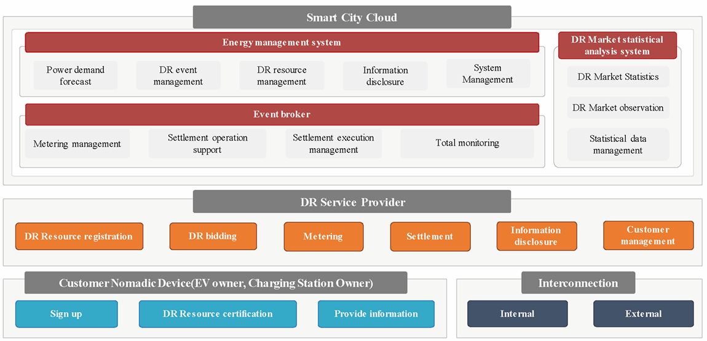
Figure 2 (Figure 6 of the source document) – Requirement of each actor for EV-based DR service
6 Requirements for communication
Chapter 6 is 2,5 pages long and describes the requirements for wired as well as wireless communication, including the figure illustrating the communication architecture. It references IEC 62746-10-1 that provides a standardized and secure DR interface that allows electricity providers to communicate DR signals directly to existing customers using a common language and existing communications such as the Internet.
7 Data set and data processing for EV-based DR
Chapter 7 is one-page description of data sets exchanged between actors in each EV-based DR service in a single table.
Annex A (informative)
is 4 page long and presents 4 different use cases. Each use case is described within a table, containing service type, customer, charging control, location of charging station and data exchange actors, and complemented with a figure of the communication architecture.
Annex B (informative)
is 3 page long and presents 3 forms to be filled in: DR customer application for registration, Consent to collection and use of personal information and Consent to collection and use of information
The bibliography
provides 1 reference to the use cases and architecture of distributed energy storage systems (IEC CDV 63382).
Intelligent Transport Systems – CALM – Infrared-Based Communication Systems
ISO 21214 · Published 2015 (Edition 2) · 144 pages
This Extract does not replace the technical standard itself; it is only informative material about the standard.
Introduction
The ISO 21214 international standard (hereinafter referred to as the described document) introduces a set of functional requirements for the communication interface of an ITS station.
The concept of ITS communications (formerly CALM) is a set of requirements aimed at unifying communication systems within ITS. It introduces the concept of an ITS station, which represents the basic building block of this communication architecture. For more information, see the Extract from ISO 21217.
A key feature of the ITS station is its ability to use various communication protocols with different access technologies. The described document specifies the method of data exchange, via an infrared interface operating at wavelengths from 850 nm to 1010 nm, and expands the interface specification with compatibility with the ITS station according to ISO 21217. For the purposes of the standard, this interface is referred to as IR. This is the second edition of the standard.
Note: This Extract presents selected chapters of the described document and retains the original chapter numbering.
Usage
The document establishes principles for implementing the IR interface into an ITS station within CALM.
For public administration authorities, it provides basic technical information to form an idea of the possibilities of using the IR interface in the ITS environment.
For manufacturers of telematics devices and their operators, it defines the requirements for communication between ITS stations in the ITS interface environment.
Scope
The described document specifies requirements for the implementation of the IR communication interface into the access layer of the ITS-S station. The document further specifies requirements for the Communication Adaptation Layer (CAL) and the Management Adaptation Entity (MAE) layer of the ITS station.
Related Documents (Selection)
The related standards are primarily those of the ITS communication group (CALM). The clause does not specify these standards in detail.
In addition to the ITS communication (CALM) standards, it references the following two standards:
ISO/IEC 8802-11:1999, Information technology — Telecommunications and information exchange between systems — Local and metropolitan area networks — Specific requirements — Part 11: Wireless LAN Medium Access Control (MAC) and Physical Layer (PHY) specifications
IEC 60825-1, Safety of laser products – Part 1: Equipment classification, requirements and user’s guide
2 Conformance
This clause contains a short paragraph with a single-line declaration stating that the standard conforms to the requirements of related international standards.
4 Terms and Definitions
The standard introduces 36 new terms. Other terms and abbreviations are provided in ISO 21217 and other CALM standards. In a separate paragraph, the standard introduces terms for the optical characteristics of the interface. Examples of terms and definitions:
communication zone – spatial zone in which two CALM-IR units are able to communicate with acceptable performance
registration phase – phase where a master identifies devices newly entering his communication zone
wake-up window; WuW – special case of a broadcast window and is used to “wake-up” sleeping units entering the communication zone of an active master
5 Symbols and abbreviated terms
The standard contains 82 abbreviations. Example abbreviations:
CIR circular QAM (a type of quadrature amplitude modulationcircular QAM)
HHH Hirt, Hassner, Heise (inventors of the HHH(1,13) code) (packet coding and modulation developed specifically for IR communication)
**IR ** infrared (infrared-based communication interface)
McW multicast window
TDMA time division multiple access
θH horizontal opening angle
θV vertical opening angle
NOTE: Other terms and abbreviations from the ITS domain can be found in the ITSTerminology dictionary (www.itsterminology.org), the StandardLand website (www.standardland.cz) or the OBP platform (www.iso.org/obp).
6 Requirements: Transmitter and Receiver Parameters
This clause, spanning 3 pages, defines the requirements for the IR receiver and IR transmitter in the form of parameter tables.
Article 6.1 Transmitter wavelengths and bandwidth and Article 6.2 – Radiated power, both on a single page, define the technical requirements for the transmitter (wavelength, bandwidth, radiated power). For example parameters, see Table 1. The clause also defines 11 transmitter classes (based on radiated power).
Table 1– IR transmitter parameter specification (Tab. 1 of the source standard)
| Parameter | Specification Channel 870 Channel 970 (main channel) (alternative channel) |
|---|---|
| TX1 Nominal transmitter wavelength | 870 nm 970 nm |
| TX2 Transmitter pass band | 820 nm to 910 nm 920 nm to 1 010 nm |
| TX3 Coherence length | < 1 mm |
| TX4 Total radiated power | Dependent on transmitter class (see 6.2) |
| TX5 Minimum receiver in-band (RX2) radiated power | 80 % of TX4 |
| TX6a Radiated power below pass band | not specified < 10 % of TX4 |
| TX6b Radiated power above pass band | < 10 % of TX4 not specified |
Article 6.3 Receiver wavelengths and bandwidths and Article 6.4 – Receiver class span two pages and define, in the form of two tables, the technical requirements for the receiver (wavelength, bandwidth).
Clause 6 also defines 16 receiver classes (based on receiver sensitivity).
7 Modulation and Coding
This clause, spanning 3 pages, defines the basic set of requirements for modulation and coding in the IR environment. It provides the basic structure of a data packet at the OSI model physical layer, including pulse durations in μs. It also defines interface communication profiles (see Table 2 (Table 9 of the standard) – Communication profiles).
Table 2 – Excerpt of Table 9 of the source standard: Communication profiles

8 Directivity and Communication Zones
This clause, spanning 3 pages, defines the geometrical and spatial requirements for the interaction of IR-based communication interfaces. It first graphically displays the geometric space of IR communication, and then shows the geometric intersection of two IR communication interfaces (see Figure 1). The next part of the clause defines communication zone shortcuts, which are essentially various geometric configurations of IR communication in space, with specific parameter values assigned according to the spatial arrangement shown in Figure 1.

Figure 1 – Horizontal opening and vertical opening angles in IR communication (Fig. 5 of the source standard)
9 Frames and Windows
This clause, spanning 20 pages, describes the general structure of communication frames in IR communication. It also defines the communication diagram for simultaneous communication of multiple IR units. Data frames are separated by a special frame structure, also described in this clause. Frames are divided into communication windows, which are also defined in this clause (management window, private window, multicast window, broadcast window, compatibility window, spare window, wake-up window).
10 MAC Commands
This clause, spanning 35 pages, describes the commands at the data link layer of the OSI model, which are used to signal interface activity between MAC communication participants. The respective subclauses describe this signalling, based on the requirements of different control units of the ITS station (specifically the IR-CAL communication adaptation layer, the IR-MAE management adaptation entity, and the IR-ME management entity). The clause also details individual MAC commands, in text and in parameter tables.
11 Registration Procedure
This clause, spanning 4 pages, describes, in text, tables, and diagrams, the registration procedure used to register the IR interface into communication.
12 Window Management
This clause, spanning 2 pages, describes, in text, the mechanism for managing communication windows within IR communication. This especially includes allocating sufficient communication time for individual IR interfaces in communication, managing communication windows for time-critical applications, controlling the required IR interface response time, and more.
13 IR Management Entity
This clause, spanning 4 pages, describes, in text and tables, the basic features of the IR interface management entity (IR-ME), which is responsible for managing the IR MAC layer and the IR physical layer of the OSI model. This unit also ensures connectivity with the higher layers of the ITS station.
14 Adaptation
This clause, spanning 6 pages, describes in text, diagrams, and tables, how to integrate the IR interface into the structure of the ITS station. The adaptation structure of the IR interface into the ITS station is shown in Figure 2.
Figure 2 – Medium adaptation of the IR interface into the ITS station (Fig. 17 of the source standard)

15 Adoption of Other Standards and Internationally Accepted Practices
This one-paragraph clause, with a reference to ISO 21217, describes how to apply the described document using local (regional) conditions and standards.
16 Marking and Labelling
This one-paragraph clause defines the requirements for labelling devices that contain IR interfaces compatible with the described document.
17 Declaration of Patents and Intellectual Property
This clause, spanning 3 pages, refers to patent ownership associated with the implementation of IR interfaces compatible with the described document.
Annex A (Normative) - Coding and Error Correction of Profiles 0 and 1 and of Commands
This 2-page annex contains textual and tabular definitions of error correction algorithms for the given communication profiles.
Annex B (Normative) - Coding and Modulation of Profile 2 to Profile 6
This 7-page annex contains textual and tabular definitions of error correction algorithms for the given communication profiles.
Annex C (Informative) - Link Power Budget
This 6-page annex contains texts, diagrams, and tables, describing the implementation of the IR interface where the power consumption in the “in-vehicle unit and roadside equipment” system is shifted to the roadside equipment. This model simplifies the implementation of the IR interface in vehicles.
Annex D (Informative) - Link Directivity Considerations
This 2-page annex provides texts and diagrams, with examples of antenna placement for the IR interface on vehicles.
Annex E (Informative) - Compatibility of CALM and Non-CALM Infrared Systems
This 2-page annex describes in text the basic mechanisms to ensure compatibility of the IR interface according to the described document with IR devices that do not meet the ISO 21214 requirements.
Annex F (Normative) - Specification of MR-IR Communication Protocol for Compatibility with ISO 21214
This 25-page annex describes in text, tables, and diagrams, the requirements for adapting the data layer of the existing MR-IR interface to achieve compatibility with the requirements of the described document.
Annex G (Informative) - Summary of changes between this version of ISO 21214 and the previously published version
This 2-page annex contains a list of changes, compared to the original edition of the standard.
Intelligent transport systems – Motorway chauffeur systems (MCS) – Part 1: Framework and general requirements
ISO 23792-1 · Published 2026 · 38 pages
This Extract does not replace the technical standard itself; it is only informative material about the standard.
Introduction
This document specifies a framework and general requirements for Level 3 automated driving systems intended for motorway operation. The standard defines the concept of a Motorway Chauffeur System (MCS) as a specific implementation of an automated driving system (ADS) that performs the entire dynamic driving task (DDT) within the current lane of travel in the presence of a fallback-ready user (FRU). The document establishes a systematic framework including system characteristics, operational design domain (ODD), state models and state transitions, functional requirements, minimum DDT performance requirements, and test scenarios.
Note: This Extract presents selected chapters of the described document and retains the original chapter numbering.
Use
This document is primarily intended for vehicle manufacturers, developers of automated driving systems, automotive industry developers, testing organizations, and regulatory authorities. It provides a reference framework for the design, specification, verification, and assessment of MCS systems and may serve as a basis for further standardization activities or regulatory requirements related to motorway automated driving.
The specification can also be used for the development of internal manufacturer requirements and for creating test scenarios and validation procedures.
Scope
This document specifies the framework, characteristics, functionalities, and minimum performance requirements for a motorway chauffeur system (MCS) performing Level 3 automated driving on motorways.
The standard specifies the basic functionalities required for in-lane operation, defines requirements related to the generation of request to intervene (RTI), specifies requirements for continuation of operation after issuing an RTI, defines minimum DDT performance requirements, and specifies test procedures. Advanced functionalities such as lane changing are addressed in other parts of the series.
This document is limited to MCS operation on limited access motorways and does not cover other forms of system engagement or means related to setting a destination and selecting a route.
Related Documents (Selection)
The standard normatively references ISO 15622:2018 related to performance requirements and test procedures for adaptive cruise control systems and ISO/SAE PAS 22736 defining terminology for driving automation systems for on-road motor vehicles.
Most additional related standards, technical specifications, and research documents are listed in the bibliography of the standard, which provides a broader context for safety, validation, and system-level frameworks of automated driving systems.
3 Terms and definitions
The document explicitly defines 6 terms and definitions (selection):
motorway – road specially designed and built for motorized traffic that does not serve properties bordering on it
route – planned sequence of waypoints to reach a destination
trajectory – sequence of locations that define the intended motion vector of the subject vehicle
vehicle motion control (VMC) – activities necessary to adjust vehicle movement continuously in real time, which include “lateral vehicle motion control” and “longitudinal vehicle motion control”
4 Symbols and abbreviated terms
The document defines 14 abbreviated terms (selection):
MCS Motorway chauffeur system
FRU fallback-ready user
DDT dynamic driving task
RTI request to intervene
MRM minimal risk manoeuvre
MRC minimal risk condition
OEDR object and event detection and response
TTC time to collision
Other terms and abbreviations from the ITS domain can be found in the ITSTerminology dictionary (www.itsterminology.org), the StandardLand website (www.standardland.cz) or the OBP plataform (www.iso.org/obp).
5 Characteristics of MCS
Clause 5 defines the conceptual framework of the system and its operational scope. It forms the basis for detailed operational requirements in Clause 6 and minimum functional requirements in Clause 7.
5.1 General
This subclause defines the fundamental nature of MCS as a Level 3 implementation requiring the presence of a fallback-ready user. MCS can be implemented in various forms; however, all implementations shall comply with the prescribed operational design domain.
5.2 Operational design domain
This subclause is further divided into five parts and systematically describes the ODD. Subclause 5.2.1 General specifies the requirement to define a pre-defined ODD for the system (Figure 2). Subclause 5.2.2 Roadway physical characteristics describes the physical structure of the motorway, lane configurations, profiles, curvatures, and related characteristics. Subclause 5.2.3 Traffic in the surrounding environment addresses characteristics of surrounding traffic and other vehicles.
Subclause 5**.2.4 Abnormalities in roadway operational condition** includes extraordinary situations such as road works or incidents. Subclause 5.2.5 Ambient environmental conditions describes weather and lighting conditions.

Figure 1 — Example of geographic boundary (geofence) of an ODD (Fig. 2 in the source document)
5.3 System functionalities
This subclause is divided into 5.3.1 General, 5.3.2 Basic functionalities to realize in-lane operation, and 5.3.3 Lane changing functionalities. Subclause 5.3.2 establishes linkage to Clause 6 and specifies implementation of the basic functionalities including performing the DDT, issuing RTIs, and capability to safely stop the vehicle. Subclause 5.3.3 distinguishes discretionary and mandatory lane changes and references other parts of the series.
5.4 System limitations
Situations that may lead to performance-impairing or incapacitating effects, and their possible consequences, should be documented (referenced to the further chapters 6.4.2.5-6).
5.5 Providing information to the user
The standard requires that, prior to first use, the user shall be informed about system functionalities, limitations, engagement conditions, and situations that may lead to a request to intervene. This clause establishes an important connection between technical requirements and human factors (referenced back to 5.2-5.4).
6 Operational requirements
Clause 6 represents the core of the standard and is systematically divided into Clauses 6.1 to 6.4, while Clauses 6.2 and 6.3 contain additional extensive subdivision.
6.1 Operating conditions
Subclause 6.1 is divided into 6.1.1 General, 6.1.2 Engagement conditions, 6.1.3 Disengagement triggering conditions, and 6.1.4 Direct disengagement conditions.
Subclause 6.1.2 specifies the conditions under which the system may transition into the normal state. Subclause 6.1.3 defines situations in which an RTI shall be generated, for example when leaving the ODD or when system performance deteriorates. Subclause 6.1.4 describes direct user interventions, such as steering override, leading to immediate disengagement.
6.2 State transition
Subclause 6.2 State transition includes subdivisions 6.2.1 to 6.2.5. Subclause 6.2.1 General introduces the state model. Subclauses 6.2.2 Off state, 6.2.3 Standby state, 6.2.4 Normal state, and 6.2.5 Requesting fallback state define individual system states and their meaning.
6.3 System functions
Subclause 6.3 is the most extensive part and contains 14 subclauses.
Subclause 6.3.1 General includes an overview of system functions in tabular form.
Subclause 6.3.2 Object and event detection and response describes OEDR requirements. Subclause 6.3.3 Vehicle motion control defines requirements for longitudinal and lateral vehicle control. Subclause 6.3.4 Generation of request to intervene specifies requirements for multimodal signalling. Subclause 6.3.5 Status indication addresses continuous communication of system state to the user.
Further subclauses, namely 6.3.6 User control interface, 6.3.7 FRU input detection, 6.3.8 MCS monitoring the FRU, 6.3.9 Subject vehicle condition monitor, 6.3.10 MCS condition monitor, 6.3.11 Localization, 6.3.12 External warning generation, 6.3.13 Functions required for route following functionalities, and 6.3.14 Related functions further elaborate individual areas of the functional system architecture.
For example, detailed requirements related to route following functionalities are specified in 6.3.13.1 and 6.3.13.2, addressing path selection and related manoeuvres, while 6.3.14.1 and 6.3.14.2 address minimal risk manoeuvres and wireless communication.
6.4 Requirements for continuing operation after detecting disengagement-triggering conditions
Subclause 6.4 is divided into 6.4.1 General, 6.4.2 Classification of adverse situations, and 6.4.3 Responses to adverse situations.
Subclause 6.4.2 introduces five severity levels of situations, ranging from situations with potential future effect to situations with incapacitating effect. Subclause 6.4.3 specifies corresponding system responses, including continued operation, issuing an RTI, or transition to a minimal risk manoeuvre.
7 Minimum performance requirements of the DDT
Clause 7 represents the normative core defining functional performance parameters of the system. While Clause 6 defines operational logic and functional architecture, Clause 7 specifies concrete minimum behavioural requirements for performing the dynamic driving task (DDT) during normal and degraded operation.
7.1 General
This subclause defines the scope of Clause 7 and emphasizes that the requirements apply to system behaviour within the prescribed operational design domain.
7.2 Operating speed range
This subclause specifies that the minimum operating speed range of the system shall include 0 km/h, meaning capability for complete stopping and subsequent restarting.
7.3 Normal operation
This subclause is further divided into 7.3.1 Sustained longitudinal vehicle motion control, 7.3.2 Sustained lateral vehicle motion control, and 7.3.3 Crash avoidance. This part contains the most specific technical limits.
Subclause 7.3.1 specifies that the system shall be capable of maintaining a safe distance from the forward vehicle and responding to its deceleration.
Subclause 7.3.2 specifies requirements for sustained lateral vehicle motion control, including maintaining the subject vehicle within the current lane of travel under defined roadway geometric conditions. It considers roadway profile and effects at higher speeds.
Subclause 7.3.3 specifies minimum requirements for system response in situations involving sudden changes in traffic conditions. The standard provides specific reference scenarios, such as aggressive cut-in from the adjacent lane with a time to collision (TTC) greater than 2,5 s, and response to an obstacle at least the size of a passenger vehicle’s free-standing tyre. This part establishes a direct link to the test scenarios in Clause 8.
7.4 Performance-impaired operation
This subclause builds upon the classification of adverse situations defined in 6.4.2 and specifies minimum requirements and recommendations for performance-impaired operation.
7.5 MCS reaction to unresponsive FRU
This subclause specifies the required system response when the fallback-ready user does not adequately respond to a request to intervene and no performance-impairing or incapacitating situation is present. This part creates a direct linkage to the functional requirements related to minimal risk manoeuvres specified in 6.3.14.1 and to the test scenarios defined in Clause 8.
8 Test procedures
Clause 8 specifies test procedures intended to verify compliance with the operational and performance requirements defined in Clauses 6 and 7. The clause is systematically divided into general testing requirements and individual scenario-based test procedures.
8.1 General
Subclause 8.1 is divided into 8.1.1 Purpose, 8.1.2 Driving environment, 8.1.3 System settings and test driver roles, 8.1.4 Common test pass criteria, 8.1.5 Confirmation of the HMI design, 8.1.6 Success rate and number of trials, 8.1.7 List of test scenarios, and 8.1.8 Test sites.
Clause 8 describes the following scenarios:
8.2 Scenario 1: MCS reaction to unresponsive FRU
This scenario verifies system behaviour when the fallback-ready user does not respond to an RTI.
8.3 Scenario 2: Direct disengagement by steering input
This scenario verifies direct disengagement initiated by user steering input.
8.4 Scenario 3: Continued operation after brake intervention
This scenario evaluates the capability of the MCS to continue operation following a brake intervention by the user under specified conditions.
8.5 Scenario 4: Forward vehicle braking hard
This scenario evaluates the response of the MCS to significant deceleration of the forward vehicle.
8.6 Scenario 5: Aggressive cut-in from the adjacent lane
This scenario (performed under two different speed and distance conditions) evaluates system response to a vehicle aggressively entering the lane in front of the subject vehicle from an adjacent lane.
8.7 Scenario 6: Obstacle in lane
This scenario evaluates system behaviour when an obstacle is present within the current lane of travel.
8.8 Scenario 8: Approaching geographical ODD boundary
This scenario verifies system behaviour when the subject vehicle approaches the geographical boundary of the prescribed ODD.
8.9 Scenario 9: Engagement restricted outside ODD
This scenario verifies that the MCS does not engage outside its prescribed operational design domain.
Bibliography
The bibliography contains references to additional standards, technical specifications, and research documents related to automated driving systems, operational design domains, safety assessment, validation methodologies, human-machine interaction, and advanced driving functionalities.
Document does not provide any Annexes.
Intelligent Transport Systems – Freight land conveyance content identification and communication – Part 2: Application interface profiles
ISO 26683-2 · Published 2013 · 38 pages
This Extract does not replace the technical standard itself; it is only informative material about the standard.
Introduction
The ISO 26683 (FLC‑CIC) set of standards uses advanced information and communication technology for freight transport, focusing on the presentation of data when providing end‑to‑end services related to cargo and their means of transport. It does not provide a system design, nor does it specify the technologies to be used.
The aim is to enable the effective handling of vehicle and trailer/semi‑trailer identification in connection with en‑route cargo information within the vehicle’s on‑board system. This supports real‑time vehicle tracking and tracing, as well as cargo monitoring. It enables shipment auditing and provides visibility into cargo status.
ISO 26683-1 provides the context and architecture for the collection and transmission of aggregated data on cargo and transport units to carriers’ commercial operating systems or to public‑sector systems (e.g. customs, transport statistics, international trade). It also lists the reference standards relevant to all parts of this standard family.
ISO 26683-2 (further on also referred to as “the document described”) contains descriptions of various application interface profiles for communication during the identification of cargo or the contents of freight vehicles, linked to other services such as handling in multimodal transport.
Note: The Extract presents selected chapters of the described document and retains the original chapter numbering.
Usage
This set of standards provides examples for designing interoperable systems related to transport means and cargo. It covers the provision of information for tracking, managing, and tracing goods in multimodal transport and handling — from the individual item level, regardless of the number or type of packaging or transport units, to the description of the connection with the transport vehicle/unit and the infrastructure (e.g., a dispatch centre).
The document described specifies interface profiles for various types of communication that enable interoperability in multimodal freight transport. The document allows readers to understand scenarios for possible freight‑unit configurations and the related communication using the defined profiles. In addition to the technical description, each profile includes a set of standards that must be considered for interoperability, presented in a clear and detailed way for potential users.
Scope
The document described focuses on application interface profiles for data aggregation and transfer in the context of ISO 26683-1. It enables the provision of interoperable data for the visibility of goods during transport and for services in land freight transport, through the specification of application interface profiles. The interfaces relate to various types of communication between the cargo item, semi-trailer or trailer, vehicle, and infrastructure. It also includes representations of the physical configurations of different combinations of semi-trailers or trailers with a road tractor.
Related Documents (Selection)
Related standards (59) are listed in Clause 2, References to Standards, and in the Bibliography (9) at the end of the standard. The most relevant standards are the other parts of the FLC‑CIC set. For the primary list of referenced standards see ISO 26683-1.
Standards for specific communication methods used in particular profiles are listed in Clause 6, directly within the individual application interface profiles.
3 Terms and Definitions
This clause defines 33 terms; the Extract lists only selection of the most important ones:
application interface – communication point where one part of a system communicates with another in order to service an application
application interface profile – series and sequence of behaviour and protocols including, where appropriate, the identification of chosen classes, conforming subsets, options and parameters of those base standards necessary to accomplish a defined function at an interface in a particular way such that it can be used interoperably between two parties
interrogator – a device performing reading functions, additionally capable of sending data to the on-board equipment (OBE) via wireless transmission
reader – a device that communicates with the OBE to read or write information
4 Abbreviations
The standard contains 35 abbreviations; relevant for understanding this Extract are:
DSRC – dedicated short range communication
FLC-CIC – freight land conveyance content identification and communication
IMS – IP multimedia subsystem (a standard for an architectural framework)
OBE/OBU – on-board equipment/on-board unit
OCR – optical character recognition (ie. a symbol for a product description)
PDE – portable data collection equipment
PHS – personal handy-phone system
RFID – radio-frequency identification
UBL – universal business language (standard by OASIS, for business, including a library for transport)
UMTS – universal mobile telecommunication system (for 3G networks)
WPA – WiFi protected access secured (WiFi access, using encryption)
NOTE: Other terms and abbreviations from the ITS domain can be found in the ITSTerminology dictionary (www.itsterminology.org), the StandardLand website (www.standardland.cz) or the OBP platform (www.iso.org/obp).
5 Context
Clause 5 is about half a page long. It refers back to the context information provided in ISO 26683-1. The document described focuses on interface profiles for data transmission. All profiles are optional/voluntary, and when applied in accordance with the document described, they provide a basis for interoperability.
A brief overview of data transmission is provided in the following subclauses: 5.2 Transfer of data from tags to interrogators (Profile Level 3); 5.3 Transfer of data from trailers to OBE (Profile Level 2); 5.4 Transfer of data from OBE to infrastructure (Profile Level 1).
6 Freight land conveyance content and communication – Application interface profiles
Clause 6, comprising 32 pages, forms the core of the document. It provides a detailed description of the communication levels and the corresponding individual application interface profiles associated with each level.
6.1 General
The document does not define a single specific application interface profile. Instead, it “provides interoperability where a communication medium has been selected and is in compliance with one or more of the standards referenced in Annex A of ISO 26683-1.” The profiles conform to the profile format defined in ISO/IEC TR 10000-1.
6.2 Taxonomy of freight land conveyance content and communication application interface profiles
Profiles for three basic levels of communication are specified. There is also a fourth layer for profiles, independent on scenarios, to be used accordingly to the needs of its instance and demand of the user.
Level 1 (L1): from the vehicle’s OBE to the roadside infrastructure
Level 2 (L2): a) from the trailer(s) to the OBE or b) from items directly to the OBE
Level 3 (L3): from the item (incl. item sensors) to the interrogator/OBE of the trailer
Level D1: for data presentation only; data formatting in UBL, accordingly to potential requirements
The following clauses deal with application profiles, related standards, requirements, and compliance. The method of data collection and auditing for identifying the cargo list is not defined in the profiles and is of an individual decision of the participant. The clauses below describe the 11 profiles for all of the above mentioned levels, L1 through L3 and D1.
6.3 FLC-CIC Profile No.L1-1: ISO 15628 DSRC (optional)
The scenario for the profile is as follows: data from the cargo is collected using DSRC on-board communication; the device uses the DSRC application layer in accordance with ISO 15628.
6.4 FLC-CIC Profile No.L1-2: ISO 21215 CALM M5Hz DSRC (optional)
The scenario focuses on collecting data from cargo via on-board DSRC equipment, and using 5 GHz communications stations (CALM) in accordance with ISO 21215.
6.5 FLC-CIC Profile No.L1-3: ISO 10374 (optional)
This scenario describes the possibility of collecting cargo data via on-board equipment, communicating in accordance with ISO 10374 (for automatic container identification). Communication can run in any point of the route where are:
interrogators in accordance with ISO 10374
an on-board transponder in accordance with ISO 10374
6.6 FLC-CIC Profile No.L1-4: GSM/UMTS/LTE/IMS/PDC/PHS (optional)
This profile uses the wireless communication among devices designed by 3GPP for 3G mobile systems in GSM networks and for radio technologies.
6.7 FLC-CIC Profile No.L1-5: ISO IEC 18000 (optional)
Scenario of the profile enables the collection, archiving, and transmission of data from cargo via on-board equipment, communicating in accordance with ISO 18000-6 Type B or Type C, where:
installed interrogators are in accordance with ISO 18000-6, Type B or C
the on-board transponder complies with ISO 18000-6, of the same type as the interrogator (Type B or C)
6.8 FLC-CIC Profile No.L2-1: Item data agglomeration direct to vehicle OBE using RFID (optional)
Profile L2-1 describes usage of an RFID tag attached to a cargo item, and transmitting data directly to the OBE interrogator. It is recommended to use a system that complies with the RFID standards listed in the Annex A of ISO 26683-1.
6.9 FLC-CIC Profile No.L2-2: Data agglomeration from multiple trailers (optional)
The profile is similar to L2-1, but for multiple containers or trailers. First, data is collected from items/sensors/seals into the interrogator or OBE of a trailer or a semi-trailer. Then, as the second step, the data is transferred to the vehicle OBE. Figure 1 below provides a schematic description of the physical architecture, but other solutions are also possible.

Figure 1 – Communication diagram – a tractor unit with semi-trailer and trailer and two loaded containers with items monitored by sensors (Fig. 7 of the source standard)
6.10 FLC-CIC Profile No.L3-1: Item data agglomeration to trailer interrogator using RFID (optional)
In this scenario, items have an attached RFID tag, from which data is transmitted to the interrogator of a semi-trailer or a trailer.
6.11 FLC-CIC Profile No.L3-2: Item data agglomeration to vehicle OBE using short range RFID and/or bar-code or OCR (optional)
In this scenario, the cargo contents are identified and audited only after loading: by an RFID interrogator or a barcode reader or by scanning an OCR marking. These devices do not have the range and capability to reliably collect data from items during loading.
6.12 FLC-CIC Profile No.L3-3: Item data agglomeration to vehicle OBE using short range RFID and/or bar-code where the tractor/truck does not have fixed OBE (optional)
Profile L3-3 is aimed for express or postal delivery systems, for supplying supermarkets or other warehouses, etc. Vehicles do not usually have the fixed OBEs, but use the driver’s mobile device, which communicates with the dispatch centre either by physical or wireless connection.
6.13 FLC-CIC Profile No.D1-1: ITS consignment in UBL representation (optional)
This is a supporting profile for all profiles described above. This one is intended for all ways of communication (levels L1 to L3). Profile D1-1 focuses on the method for converting cargo data into the UBL format specified in the OASIS standard: UBL-CommonLibrary-2.
Clauses 7-10
Chapters 7–10 cover the following four topics and each contain only one general statement:
Clause 7 – Security provisions
Clause 8 – Test and conformance requirements
Clause 9 – Marking, labelling and packaging
Clause 10 – Declaration of patents and intellectual property
Intelligent transport systems – Cooperative ITS – Using V2I and I2V communications for applications related to signalized intersections
ISO/TS 19091 · Published 2019 (Edition 2) · 233 pages
This Extract does not replace the technical standard itself; it is only informative material about the standard.
Introduction
ISO/TS 19091 (hereinafter referred to as “this document”) describes the use cases for several applications in the domain of signalized intersections, the goal of which is to improve safety, mobility, and environmental sustainability. For each use case, the information needs are defined that must be fulfilled through communication between vehicles and the infrastructure. In this way, the requirements for individual applications are defined, and these are subsequently mapped to data frames and data elements through which the individual requirements are fulfilled within the defined message set.
Note: This Extract presents selected chapters of the described document and retains the original chapter numbering.
Usage
The aim of this specification is to define how the defined C-ITS message structures of types SPaT, MAP, SSM, and SRM can be used for C-ITS use cases related to signalized intersections. This document is therefore suitable for:
-
C-ITS service providers as a catalogue of C-ITS use cases applicable at signalized intersections.
-
Equipment manufacturers and telematics system suppliers as a technical specification defining the specific use of data frames and data elements to fulfil the requirements of individual use cases.
Scope
This document defines the messages, data structures, and data elements to support exchanges between the roadside equipment and vehicles, specifically for SPaT, MAP, SSM, and SRM message types. The document consists of common clauses that are labelled informative and are generally applicable to all implementations and regions. These clauses also frequently contain references to other standards defining the content of other message types beyond those listed above.
Furthermore, the document contains 7 annexes, the content of which includes both the functional description of individual use cases in the domain of signalized intersections, the mapping of use case requirements to the content of individual data structures and data elements of the above message types, and also the individual regional profiles utilizing the so-called extension principle of data messages.
Related Documents (Selection)
The following documents are referred to in the text in such a way that some or all of their content constitutes requirements of this document.
-
ISO 22951, Data dictionary and message sets for preemption and prioritization signal systems for emergency and public transport vehicles (PRESTO)
-
ISO 26684, Intelligent transport systems (ITS) – Cooperative intersection signal information and violation warning systems (CIWS) – Performance requirements and test procedures
-
SAE J2735™: 2016, Dedicated Short Range Communications (DSRC) Message Set Dictionary
-
EN 302 637-2 V1.3.2, Intelligent Transport Systems (ITS); Vehicular Communications; Basic Set of Applications; Part 2: Specification of Cooperative Awareness Basic Service
-
ARIB STD-T109, 700 MHz Band Intelligent Transport Systems
-
ITS FORUM RC-010, 700 MHz Band Intelligent Transport Systems – Extended Functions Guideline, published on March 15, 2012
-
ETSI/TS 102 894-2 V1.2.2, Intelligent Transport Systems (ITS); Users and applications requirements; Part 2: Applications and facilities layer; common data dictionary
3 Terms and Definitions
The technical specification defines 52 terms. The most important include:
MAP data message (MAP) – data elements and frames comprising a message, the contents of which describe the geometry of a roadway intersection
signal phase and timing (SPaT) – a message sent from the infrastructure to C-ITS devices describing the current state of the traffic signal controller (at one or more intersections), its phases, and the relationship to possible intersection manoeuvres
signal request message (SRM) – a message sent from C-ITS devices to the infrastructure, by which a vehicle requests preferential treatment from the traffic signal controller for passage through the intersection
signal status message (SSM) – a message sent from the infrastructure to C-ITS devices, containing the details of the traffic signal controller’s response to a request for preferential treatment at the intersection
roadside equipment (RSE) – equipment located at the infrastructure side that creates and transmits messages to vehicles and receives messages from vehicles for the purpose of supporting V2I and I2V applications
4 Abbreviated Terms
The technical specification contains 51 abbreviations. The most important include:
CV Connected Vehicle
OBE On-Board Equipment
RSE Roadside Equipment
SPaT Signal Phase and Timing
SRM Signal Request Message (J2735™)
SSM Signal Status Message (J2735™)
TSC Traffic Signal Controller
Other terms and abbreviations from the ITS domain can be found in the ITSTerminology dictionary (www.itsterminology.org), the StandardLand website (www.standardland.cz) or the OBP plataform (www.iso.org/obp).
5 General Description (informative)
This clause, spanning 14 pages and 5 subclauses, provides introductory explanatory information primarily relating to Annex A – the list of use cases. It describes how the use cases are divided into three areas: safety, mobility/sustainability, and priority/pre-emption for specific types of transport within the transport system. It also describes that in Annex A, the use cases are described by a set of 16 descriptive characteristics, ranging from basic identification information, through data flow sequence descriptions, to potential risks/issues.
The “Functional model” subclause describes the three basic components within V2I/I2V communications at signalized intersections, i.e. vehicle equipment, infrastructure, and traffic management, their roles and the relationships between them. Emphasis is placed primarily on communication between vehicles and the infrastructure; however, other interactions with traffic management applications etc. are described at least at a general level. A detailed analysis of these interactions is, however, outside the scope of this document.
Within the functional model, the general system architecture is also described, including the technical components with which the individual elements described above are equipped – see Figure 1 below. The functions of individual elements in this figure are described in the standard to the extent of approximately one page.

Figure 1 – General architecture for V2I/I2V communications (Fig. 2 of the source standard)
Furthermore, the Functional model addresses message interactions, i.e. an explanation of the broadcast principle within DSRC communications and the implications and requirements this has for message transmission (frequent repetition of the same message “over the air” instead of interactive information exchange used in TCP/IP).
In the last part of the “Functional model” subclause, entitled “Common operational assumptions”, 11 primarily technical assumptions are listed and explained, which the authors of the standard considered valid during the design and description of the individual use cases. As an example, the first assumption states:
“It is assumed that all OBE equipped vehicles are broadcasting the basic safety message (BSM) or cooperative awareness message (CAM) continuously at some repetition rate that may change depending on the presence of active vehicles. Generally, a rate of 10 messages per second is assumed; however, the exact latency needed for the use cases has yet to be determined. It is likely that a rate of less than 10 Hz will be sufficient for these applications.”
In subclauses 5.3 to 5.5, the groups of use cases into which the authors of the standard have divided them are further described in general terms, namely:
-
Safety use cases
-
Mobility/sustainability use cases
-
Priority/pre-emption use cases
In this division, the individual use cases are also described in detail in Annex A. For each of the above groups, this subclause describes the intent (what problem the given group of use cases targets), specific assumptions beyond those stated in the preceding subclause, and architecture implications as also described in the preceding subclause.
6 Function Description (informative)
This clause, spanning 18 pages, describes the functional requirements divided by individual components (e.g. devices) or messages and their parts that are involved in the process of information exchange between the infrastructure (RSE) and the vehicle (OBE) within the defined use cases. The individual requirements are described in the extent of one to two short paragraphs and are subsequently mapped to use cases in Annex B.
The requirements are divided into the following subclauses:
-
Public safety vehicle
-
Signal pre-emption
-
Public transport and commercial vehicle
-
Signal priority requirements
-
Broadcast area’s geometrics
-
Broadcast GNSS augmentation details
-
Signalized intersection requirements
-
Broadcast cross traffic sensor information
-
Broadcast vulnerable road user sensor information
-
Broadcast dilemma zone violation warning
-
Broadcast signal preferential treatment status
-
Message identifier
-
System performance requirements
-
Transmission rates — Signal preferential treatment
-
Transmission rate requirements — Broadcast roadway geometrics information
-
Transmission rate requirements — GNSS augmentations detail broadcasts
-
Transmission rate requirements — Broadcast signal phase and timing information
-
Transmission rate requirements — Broadcast cross traffic sensor information
-
Transmission rate requirements — Broadcast vulnerable road user sensor information
7 Messages
In this very brief clause, the following is literally stated:
“This document specifies the data dictionary to be used internationally for the deployment of the following messages:
-
map data (MAP);
-
signal phase and timing (SPaT);
-
signal request message (SRM);
-
signal status message (SSM).
The structure of these messages is defined by selection of an annex and the message requirements therein. The annexes with message structure requirements are as follows:
-
Annex E Profile A for J2735™;
-
Annex F Profile B for J2735™;
-
Annex G Profile C for J2735™.“
8 Conformance
This brief clause defines in 3 points the conditions under which a specific implementation of C-ITS systems may be considered conformant with this document.
Annex A (informative) Use Cases
This annex is the key content of this document, as it contains detailed descriptions of individual use cases. On the introductory page of this annex, a list is provided in a clear tabular form, from which it can be seen that the annex contains descriptions of a total of 25 use cases, divided according to the groups defined in Clause 5 of this document.
What follows is the detailed description of each use case, which also takes the form of a table with the following parts/rows:
-
Use case name
-
Category – according to the classification in Clause 5
-
Infrastructure role – describes the role of the infrastructure in the given use case
-
Short description – typically one sentence
-
Goal – what is the objective of the given use case
-
Constraints – recorded technical, organizational, or other constraints
-
Geographic scope – whether it concerns a single intersection or an entire area
-
Actors – e.g. public transport vehicle, roadside equipment, etc.
-
Illustration – a clear graphical diagram including all actors and data flows
-
Preconditions – must be met before the given use case can begin
-
Main flow – a sequence of steps on the part of individual actors within the given use case
-
Alternative flow – a sequence of steps in an alternative scenario. Some use cases have multiple alternative scenarios
-
Post-conditions – description of steps that need to be taken to end the given use case and return to normal state/operation
-
Information requirements – enumerates the specific data elements and data frames of C-ITS message types SPaT, MAP, SRM, SSM, and BSM/CAM needed to realize the given use case
-
Issues – describes known issues with the realization of the given use case. Thematically similar to “constraints” above
Annex B (informative) Use Case to Requirements Traceability
The content of this annex is a tabular mapping of functional requirements defined in Clause 6 of this document to the use cases described in detail in Annex A. The annex contains 3 main tables/matrices corresponding to the use case groups per Clause 5, where the rows list functional requirements from Clause 6 and the columns list use cases from Annex A. Within each matrix, it is indicated whether the respective functional requirement is mandatory (M), optional (O), conditional (C), not applicable (N/A), mandatory only in some regions (REG), or prohibited (X) for the given use case.
Annex C (informative) Requirements Traceability Matrix
This annex defines the relationship between functional requirements defined in Clause 6 of this document and specific data frames and data elements in various types of C-ITS messages. In tabular form, for each defined functional requirement, the specific content of the C-ITS message is defined by which the given requirement can be fulfilled.
Annex D (normative) Extension Procedures
This annex briefly explains in half a page that the SAE J2735™ data dictionary is designed with a mechanism for extending messages for local (i.e. regional) needs, and that this mechanism is described in more detail in the SAE J2735™ standard itself.
Annexes E + F + G (normative) Profile A, Profile B, Profile C for J2735™
These annexes define the individual profiles for different regions. The profiles essentially define which use cases (see Annex A), requirements (Clause 6), and their mappings to data frames and data elements (Annex C) are applicable in the given regions. If any extensions to individual C-ITS message types (see Annex D) are used in the given region, these extensions are specified here. This document contains 3 profiles corresponding to 3 annexes:
-
Profile A (used primarily in the USA, note by the extract author)
-
Profile B (used primarily in Japan, note by the extract author)
-
Profile C (used primarily in Europe, note by the extract author) – uses data elements from ETSI/TS 102 894-2
Intelligent transport systems – Dynamic data and map database specification for connected and automated driving system applications – Part 1: Architecture and logical data model for harmonization of static map data
ISO/TS 22726-1 · Published 2025 (Edition 2) · 269 pages
This Extract does not replace the technical standard itself; it is only informative material about the standard.
Introduction
The ISO/TS 22726 series was created in response to the need to unify the way static map data for automated driving (ADS) are represented and stored. Modern vehicles with a high degree of automation require extremely precise, consistent, and rapidly accessible map data that link detailed descriptions of infrastructure with dynamic traffic information. Existing standards — such as ISO 14296 or GDF 5.1 - cover navigation or data exchange between providers, but they are not optimized for runtime access in onboard systems nor for representing detailed elements such as lanes, their topology, precise geometries, or relationships to traffic events.
ISO/TS 22726-1 therefore defines the logical data model and database structure for storing and directly querying detailed static map entities. ISO/TS 22726-2 builds on this model and specifies physical data structures and implementation rules so that the model can be deployed in databases used by vehicles, backends and map service providers. Together, they form the foundational framework for the next generation of high-precision maps for automated driving.
This Extract describes Part 1 of the standard (hereinafter “the described document”).
Note: This Extract presents selected chapters of the described document and retains the original chapter numbering.
Use
This standard is intended for map providers, vehicle manufacturers, ADS function suppliers and C-ITS service operators. It enables a unified method for storing and updating detailed map layers, reducing maintenance costs, and ensuring interoperability across suppliers. Vehicle manufacturers use it when integrating map libraries, where fast and deterministic access to data and clear relationships between static and dynamic information are essential.
This standard is applied in the creation of HD maps, updating map layers, validating fleet sensor data, trajectory planning or integrating traffic events into map bases. The result is a unified environment that supports safe and reliable automated driving across the mobility ecosystem.
Scope
The described document specifies the architecture and logical data model of static map data (MHAD) for ADS. It defines the main packages, their elements, common data classes, rules for the position and geometry of elements, modelling of traffic regulations and conformance requirements (see Annex A).
Related Documents (Selection)
The described document lists one normative reference ISO/IEC 19501 UML version 1.4.2
3 Terms and Definitions
The clause contains 11 terms and definitions, the most important of which are:
feature – database representation of a real-world object
belt – configuration concept for defining an area bounded by side lines and terminal lines, characterized by directions, and represented by one or more linear axes when skeletonized
The following terms are also used in the standard and in the extract:
package – logical unit of the model that groups related data elements into a single whole and defines their shared namespace
subpackage – package hierarchically placed inside another package, used for finer structuring of its content
4 Abbreviations
This clause lists 33 abbreviations, the most important of which are:
ADS automated driving system
MHAD map for highly automated driving
RBE RoadBeltElement
LBE LaneBeltElement
RSE RoadStructuresAndEquipment
Other terms and abbreviations from the ITS domain can be found in the ITS Terminology dictionary (www.itsterminology.org), the StandardLand website (www.standardland.cz) or the OBP platform (www.iso.org/obp).
5 Document structure and conformance
This clause, 2 pages in length, refers to the main parts of the document and sets the requirements for conformance of implementations with this standard and for conformance of UML diagrams with ISO/IEC 19501.
6 Architecture
This clause, 1.5 pages long and containing one diagram, presents the conceptual architecture of an ITS station for ADS with various application modules (e.g. localization module, driving control module). It defines MHAD as the primary static source, with dynamic data complementing the current state of the environment and capable of updating MHAD.
7 Logical data model of map data
This clause, 2 pages long, shows a general data model derived from ISO 14296 and the extension of the Transportation package with MHAD. It identifies the main packages (AddressLocation, Cartographic, Service&POI, Transportation, DynamicInformation) of the overall map data model and shows, in a diagram, the relationships between them and MHAD as part of the Transportation package.
The diagram shows the structure of the Transportation package with MHAD components including RoadBeltNetwork, LaneBeltNetwork and RoadStructureAndEquipment, their relationships to RoadNetwork and TransferZoneNetwork and other networks, and specifies in which standards these network components are defined.
8 MHAD package
This overview clause, four pages long, defines the key concepts and configuration of the MHAD package. It identifies the subpackages of the MHAD package: RoadStructureAndEquipment, RoadBeltNetwork, LaneBeltNetwork and the shared package MHADCommonProperty, and shows their interdependencies in a class diagram.
It describes the belt concept for roads, intersections and lanes as an area element defined by direction, width and side and terminal boundaries (lines), and shows two examples.
It describes the relationships between road features and road structure, and equipment features and shows, in a diagram, how road structure and equipment elements (bridge, guardrail) are assigned to road features (road belt) using anchor positions and projection points/lines. It defines, in a table, the composition of the MHAD class and its relationship with the subpackages.

Figure 1 – Example of the relationship between a road belt (A) with a bridge (B) and a guardrail (C) using anchor positions (1) and projection points (2) and projection lines (3) (Fig. 7 of the source standard)
9 MHADCommonProperty package
This clause, 75 pages in length, describes the MHADCommonProperty package, which defines the common data classes and relationships used within the MHAD data model. The package is divided into three main subpackages GeneralCommonProperty, CommonPhysicalCharacteristics and TrafficRegulation, described in separate subclauses. Each subpackage contains a class diagram and detailed descriptions of each class.
The detailed class descriptions (in tabular form) include:
-
the class definition, whether it is abstract, its parent type and stereotype,
-
class attributes with their definitions, value types, multiplicities, and stereotypes,
-
relationships with other classes, including definition, relationship type, multiplicity, and stereotype.
The stereotype of an attribute may be a primitive type (a Boolean value), another complex class, or a class containing only an enumeration of values. An example of a tabular class definition for the class VerticalGradient from the CommonPhysicalCharacteristics package is shown in the following table.
Table 1 – Definition of the class VerticalGradient (Tab. 32 of the source standard)
| Class: VerticalGradient | ||
|---|---|---|
| Definition: Segment of a vertical alignment that element has a single longitudinal gradient ratio. | ||
| Subtype of: VerticalAlignmentElement | ||
| Stereotypes: «DataType» | ||
| Attribute: gradientRatioValue | ||
| Definition: | Longitudinal slope ratio as a percentage where the value is positive for ascending cases and negative for descending cases. Example: value = +5.000% |
|
| Value type: | Decimal | |
| Multiplicity: | 1 | |
| Stereotypes: | «PrimitiveType» | |
| NOTE This class inherits the attributes a sequentialNumber, a startPoint, and an endPoint from the attributes of the vertical alignment element superclass. | ||
The TrafficRegulation package is the most extensive one; in addition, it defines the methodology for modelling traffic regulations, including the ability to describe time‑based and vehicle‑based conditions (defined as the TimeCondition and VehicleCondition subpackages), as well as the main objects for defining permanent and temporary regulations.
TrafficRegulation is linked to belt features and manoeuvre trajectories at the lane or road level to enforce traffic regulations (turn prohibitions, time‑limited restrictions, conditional permissions, etc.).
10 RoadBeltNetwork package
This clause, spanning 61 pages, describes the model of the road belt network. RoadBeltNetwork consists of the following subpackages: RoadBeltNetworkFeature, RoadBeltFeatureProperty, and RoadBeltSegmentProperty. It defines the class diagram of this package and the detailed rules for modelling the RoadBeltNetwork, that is, how the classes describing intersections, manoeuvre trajectories at the road level, and the elements and segments of the road belt are constructed and interconnected, including examples.
The individual classes contained in the package are described in a manner similar to Clause 9.

Figure 2 – Diagram of RoadBeltElement and IntersectionBelt (Fig. 16 of the source standard)
11 LaneBeltNetwork package
This clause, spanning 35 pages, describes the model of lane belt networks. LaneBeltNetwork models the lane-level structure with an analogous structure to the road-level model, but with higher granularity. It consists of the following subpackages: LaneBeltNetworkFeature, LaneBeltFeatureProperty, and LaneBeltSegmentProperty. It defines the class diagram of this package and the detailed rules for modelling the LaneBeltNetwork, that is, how the classes describing the elements and connections of the lane belt are constructed and interconnected, and how manoeuvre trajectories at the lane level are modelled.

Figure 3– Example of a lane-level manoeuvre trajectory (C) containing lane belt elements (A) and their connections (B) (Fig. 23 of the source standard)
12 RoadStructureAndEquipment package
This clause, spanning 99 pages, describes the model of road structures and road equipment, including horizontal road markings.
RoadStructureAndEquipment consists of the following subpackages: RoadEquipment, RoadMarking, RoadStructure, and RSECommonProperty.
It defines the list of elements (see the example in the following table) and indicates to which preceding network concept they belong.
Table 2 – Excerpt from Tab. 172 of the source standard: Overview of RSE categories
| Category | Example element | Note |
|---|---|---|
| Road Structure | central reserve (CentralReserve); tunnel (Tunnel); road bridge (VehicleBridge) | |
| Road Equipment | vertical traffic sign (RoadSign); traffic pole (TrafficPole); guardrail (Guardrail) | |
| Road Marking | stop line (StopLine); pedestrian crossing (PedestrianCrossing); longitudinal marking (LaneEdgeMarking) |
At the level of each subpackage, the clause contains a class diagram and a detailed description of the individual classes. The classes contained in the package are described in a manner like Clause 9.
13 Relationship between MHAD and dynamic information
This clause, in two sentences, notes that dynamic information defined in TS 22726-2 may refine MHAD through the RoadNetworkElement interface and refers to the diagram in Clause 9.2.
Annex A (normative) – Abstract test suite
This annex, one page in length, lists the test items for verifying data structures in bullet form and refers to Clause 7.
Annex B (informative) – Basic data types and stereotypes
This annex, 1.5 pages long, provides a table containing the definitions and source standards of primitive data types (number, string, etc.) and stereotypes (weight, speed, time, linear and point data, etc.) taken from other standards.
Annex C (informative) – Resolution and accuracy of MHAD
This annex, one page long, provides recommended resolution and metrics for positional data (GNSS/RTK), tolerances, and methodologies for accuracy validation.
Annex D (informative) – Comparison of road network models
This annex, five pages long, compares the MHAD belt model with traditional linear models (ISO/TS 20452, ISO 14296, GDF/ISO 20524-2) and includes recommendations for transformations and interoperability.
Intelligent transport systems – Roadside modules AP-DATEX data interface – Part 10: Variable message signs
ISO/TS 22741-10 · Published 2024 · 30 pages
This Extract does not replace the technical standard itself; it is only informative material about the standard.
Introduction
The ISO 22741-10 standard (hereinafter referred to as ‘the described document’) is part of a set of standards that define the principles of information exchange between infrastructure devices and traffic centres using AP-DATEX (an application profile of DATEX II, which serves for the exchange of traffic data between various information systems).
The described document focuses on defining the requirements for the format and method of bidirectional data exchange between Variable Message Signs (hereinafter VMS) and the traffic center in real time, thus enabling effective and efficient traffic management on the communication network.
The aim of the described document is to establish user requirements for the display area of VMS devices, especially requirements for reliability, specification, and technical condition of the devices.
Note: This Extract presents selected chapters of the described document and retains the original chapter numbering.
Usage
The described document is intended primarily for manufacturers and suppliers of ITS components on infrastructure, as well as for contracting authorities and investors, to ensure that supplied devices will be compatible and harmonized within the entire ITS system, which should be required in the technical conditions of tenders for the supply and installation of these devices and require suppliers to demonstrate compliance.
Scope
The described document defines the basic user requirements for the display parts of VMS (i.e., LED matrices) to ensure interoperability between different VMS manufacturers in relation to the superior control system.
Related Documents (Selection)
The standard refers to only one related document: ISO 22741-1, Intelligent Transport Systems — Roadside modules AP-DATEX data interface — Part 1: Overview
3 Terms and Definitions
The described document refers to the terms listed in ISO 22741-1 and the ISO and IEC terminology database. There are 5 terms defined, the most important of which are the following:
centre system – intelligent transport systems (ITS) component that provides application, management and/or administrative functions from a centralized location (i.e. not at the roadside)
message – data concept consisting of a grouping of data elements, data frames, or data elements and data frames, that is used to convey a complete set of information
traffic management system –centre system that monitors and controls traffic and the road network
variable message sign (VMS) – field device that can display real-time traveller information to the public
4 Abbreviations
This clause defines ten abbreviations, the most important of which are the following:
AP-DATEX Application profile of DATEX II, used for the exchange of traffic data between various information systems
VMS Variable Message Sign, which allows setting variable traffic symbols and information according to the current traffic situation
Other terms and abbreviations from the ITS domain can be found in the ITSTerminology dictionary (www.itsterminology.org), the StandardLand website (www.standardland.cz) or the OBP plataform (www.iso.org/obp).
5 Conformance
The chapter presents two tables with references to the conditions for demonstrating compliance, referring to standard 22741-1.
Table 1 defines user needs and the obligation to demonstrate their compliance (O = Optional, M = Mandatory).
Table 1 — User need to feature conformance (Tab. 1 of the source standard)
| User needs defined in this document | |
|---|---|
| 7.2: Manage the sign display | M |
| 8.2: Message library | M |
| 8.3: Sign display | M |
| 8.7: Sign display light sensors | M |
| 8.8: Sign display pixels | O |
6 Physical Architecture
The chapter contains a description of the physical arrangement of the VMS device itself. A general description of the system is given, also in relation to superior control (central system or locally via computer).
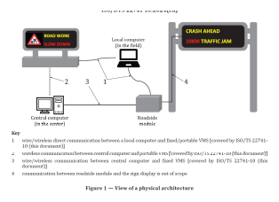
Figure 1 – View of y physical architecture (Fig. 1 of the source standard)
7 User Needs
The chapter describes in detail each of the 5 user requirements: Management of VMS control mode,
-
Management of VMS control mode: Must allow changing the method of control and management of VMS (local, remote from the center, combined with priority from the center)
-
Management of VMS display part: Must allow monitoring and changing displayed symbols, texts on VMS
-
Monitoring of the VMS door part: Must provide information about the opening/closing of the VMS cabinet door
-
Monitoring of mains power supply: Must provide information about the status of mains power supply
-
Monitoring of power supply status: Must provide information about the method of VMS power supply (from mains, from batteries)
8 Requirements
The chapter describes in more detail the requirements for VMS properties, including LED matrix definition, data exchange requirements, and reliability of individual LEDs.
Example structure of Chapter 8.8:
-
8.8.1 – Definition of LED matrix (monitors the current status of each LED in the matrix)
-
8.8.2 – Data exchange requirements (provides information about pixel size, LED pitch, must allow diagnostics to determine faulty LEDs)
-
8.8.3 – Reliability of individual LEDs in the matrix (the device must monitor each LED in the matrix, each LED must ensure display in 16,777,216 colors of the RGB spectrum)
9 Dialogues
A short chapter on half a page defines communication between VMS and the client (center/local computer) for processes: Reading data from VMS and Writing data to VMS. In both processes, the chapter refers to the already mentioned standard 22741-1.
Annex A (Normative) – Data packet structures
Illustrates on 7 pages the data format for information exchange between the canter and VMS in ASN.1 format, referring to standard 15784-3.
Annex B (Normative) – Requirements traceability matrix (RTM)
The annex on 5 pages provides references to NTCIP 1203 standards.
It is Table B.1, a small sample of which is given below.
In the complete table of the described document, further requirements and references to specific chapters follow.
Table 2 – Excerpt of the Requirements traceability matrix table (Tab. B.1 of the source standard)